1 Introduction
Despite its central role in firm decisions and macroeconomic outcomes—e.g., inflation (Phillips, 1958)—, measuring marginal labor costs remains challenging. While several aggregate indicators (e.g., unemployment and output gap) are commonly used to gauge labor cost pressures, there is little consensus on the most appropriate measure of slack (Barnichon and Shapiro, 2024) and no single measure fully captures true marginal labor costs (Gal and Gertler, 1999). Moreover, their aggregate nature precludes any analysis of firm-level heterogeneity, thereby masking the granular shocks that drive price-setting behavior.
We address these limitations by developing a novel measure of marginal labor cost pressures from textual analysis of earnings calls combined with financial data. These quarterly calls contain rich firm-level information about traditionally elusive variables, e.g., political risks (Hassan et al., 2019) and cost of capital (Gormsen and Huber, 2024). We analyze 248,437 transcripts by US headquartered firms spanning 2002–2025 and find that 86% discuss labor-related issues, revealing granular, real-time information about labor market conditions that aggregate data miss.1 Building on this rich data, our paper makes two contributions. First, we develop a theoretically grounded approach to translate qualitative discussions into quantitative measures of marginal labor costs. Second, we use this measure to examine how labor cost pressures drive inflation at both aggregate and industry levels, and how individual firms respond to rising labor costs.
We begin by classifying labor-related excerpts into topics employing two approaches: (i) supervised, where we manually classify excerpts into interpretable, pre-specified topics, (ii) unsupervised, where latent topics represent principal components of high-dimensional representations (embeddings) of these excerpts.2 For our baseline, we follow the supervised approach. Through manual reading of transcripts, we identify five primary labor-related topics: 1) labor costs, 2) labor shortages, 3) headcount, 4) labor agreements, and 5) labor efficiency. Executives often qualify the discussions of costs, headcount, and efficiency by direction—higher or lower—, leaving us with \(J=8\) topics. To construct dictionaries, we begin with seed keywords directly indicative of each topic such as “labor shortage”, “labor costs”, and “wage inflation” and expand them using embeddings trained on earnings conferences calls following Hassan et al. (2024a). To measure firm \(i\)’s exposure to topic \(j\) in quarter \(t\), \(\Lambda _{it}^{j}\), we count sentences containing these keywords and normalize it by call length.
While our textual analysis provides rich descriptive evidence of labor market pressures, a more structured approach is required to quantify the economic importance of this qualitative data. We develop this framework through the firm’s cost minimization problem that features two variable factors, intermediate inputs and labor. Motivated by research emphasizing the role of non-wage amenities and frictions in labor markets (Rosen, 1986; Hwang et al., 1998; Hall and Mueller, 2018; Bagga et al., 2025), we recognize that firms facing labor cost pressures incur generalized labor costs comprising both direct wage costs and indirect expenses, such as job posting, hiring, training, and retention costs as when expanding their effective workforce.
In our framework, cost-minimizing firms equate marginal revenue products per dollar across variable inputs: An increase in marginal labor cost—holding worker productivity and output elasticities constant—should increase the share of spending on intermediate inputs.3 We therefore estimate each topic’s contribution on changes in marginal labor costs by regressing changes in firms’ revenue shares of intermediate inputs on the intensity of labor discussions of our topics—\(\Lambda _{it}=[\Lambda _{it}^{1},\Lambda _{it}^{2},...,\Lambda _{it}^{J}]\)—while controlling for revenue per employee growth, and firm and time fixed effects, thereby exploiting the within-firm variation. This approach translates our high-frequency qualitative multidimensional discussions from earnings calls into a single quantitative measure of labor cost pressures (\(\omega _{it}\)). The regression coefficients determine the optimal weights for combining different labor topics into a unified measure of their impact on firm labor costs. Finally, the theoretical structure also prevents overfitting—a common pitfall when working with high-dimensional textual data (Gentzkow et al., 2019).
We first validate this measure by comparing a sales-weighted average of \(\omega _{it}\)—an aggregate index of labor cost pressures (\(\omega _t\)) developed from our measure—with traditional aggregate indicators. Our index exhibits strong correlations: 0.75 with labor market tightness (V/U), –0.46 with unemployment, and 0.64 with the Employment Cost Index (ECI). It reveals an intriguing nonlinear relationship, sharply increasing when unemployment falls below roughly 5% and labor market tightness exceeds around 1.5. Notably, following a sharp but short-lived collapse during the Great Recession, our index remained persistently low throughout the subsequent recovery, consistent with the flattening of the Phillips curve (Powell, 2018). However, it surged dramatically during and after the COVID-19 pandemic, aligning with the steepening Phillips curve (Domash and Summers, 2022). When aggregated at the industry level, our measure maintains a robust correlation with labor market tightness and earnings growth of new hires, further validating its relevance. Despite strong correlations with aggregate and industry-level slack variables, these observables explain very little of the variation in firm-level labor cost pressures, suggesting our measure captures idiosyncratic shocks such as localized wage competition and firm-specific expansion plans.
We next quantify the pass-through from labor cost pressures to inflation using industry-level variation in the Producer Price Index (PPI). We find a strong and statistically significant relationship between increased industry-level labor cost pressures and subsequent PPI inflation even after controlling for industry and time fixed effects. Specifically, our estimates indicate that a 1.0 percentage point (pp) rise in labor cost pressures corresponds to approximately a 0.4 to 0.6 pp increase in PPI inflation over the following year. Importantly, the strength of this pass-through varies substantially across industries: sectors with higher labor intensity, such as wholesale trade, retail trade, and accommodation and food services, demonstrate stronger pass-through effects, whereas manufacturing exhibits a notably lower sensitivity along with heavily regulated industries, like utilities and healthcare.
Further, we evaluate the predictive power of the aggregate labor cost pressure measure for core Personal Consumption Expenditures (PCE) inflation using a Phillips curve framework, comparing its performance to traditional measures of labor market slack á la Barnichon and Shapiro (2024). We aggregate our quarterly industry-level measure using PCE weights and find that our measure outperforms traditional labor market indicators—such as unemployment rates, labor market tightness, the output gap, and the ECI—in explaining inflation dynamics. Our measure can explain 19.5 pp of the 29.3 pp cumulative surge in inflation during the post-pandemic period (2021–2022). Our measure also outperforms a “Raw Text” benchmark that includes the eight topic frequencies directly without the theoretical weights, confirming that the structure imposed by the firm’s first-order condition is essential.
When included alongside these traditional measures, our indicator remains statistically significant and subsumes their explanatory power. To investigate the sources of this predictive power, we decompose our measure at the firm-level into a linear “systematic” component (comoving with aggregate slack) and an “idiosyncratic” residual (orthogonal to aggregate slack). We find that the idiosyncratic residual robustly predicts inflation in Phillips-curve regressions, whereas the systematic component does not. This result highlights the critical role of our measure in capturing firm-level convexities and granular shocks in labor cost pressures. For instance, when the marginal cost curve is non-linear, the dispersion of firm-level constraints generates net inflationary pressure that aggregate slack variables miss.
Finally, we exploit the disaggregated nature of our measure to examine how firms respond to labor cost pressures beyond price adjustments. We analyze responses in investment rates, R&D spending, and productivity measures. Our empirical strategy employs a comprehensive set of controls including firm and year fixed effects and industry and firm characteristics to isolate the relationship between labor cost pressures and firm investment behavior.
Firms experiencing higher labor cost pressures increase their investment, with this effect particularly pronounced in industries that heavily employ routine manual workers. These differential investment responses translate into productivity outcomes as well. Firms facing labor cost pressures in routine-manual task-intensive industries experience faster productivity growth, a one standard deviation increase corresponds to a 1.55 percentage point increase in productivity growth. These findings suggest that labor cost pressures accelerate automation and technological adoption, particularly in industries where human labor can be more readily substituted with capital. They also explain why the pass-through of labor cost pressures to PPI inflation is highest for services and near-zero for manufacturing.
Related Literature. Our paper contributes to two strands of literature using textual data in economics. The first employs textual analysis to study previously unmeasurable phenomena such as sentiment and preferences embedded in FOMC transcripts and press conferences (Gorodnichenko et al., 2023; Ahn et al., 2025b; Howes et al., 2026; Ahn et al., 2025a), economic and political uncertainty (Baker et al., 2016; Gorodnichenko et al., 2021; Hassan et al., 2019; Hassan et al., 2024b; Hassan et al., 2023), attention to macroeconomic variables or financial constraints (Song and Stern, 2024; Buehlmaier and Whited, 2018), labor shortages (Harford et al., 2024), and non-wage clauses in firm-worker negotiations (Arold et al., 2024). We extend this method by quantifying firm-level textual measures using a theoretical framework.4 This proves essential: raw counts of labor discussions—the prior approach—show no correlation with aggregate slack variables or inflation, whereas our theoretically-grounded measure exhibits strong correlations with both, demonstrating that economic theory substantially improves the predictive power of textual data.
Second, a recent literature uses natural language processing to forecast macroeconomic variables. Most studies time-aggregate their text signal—e.g., averaging daily news-sentiment or collapsing a quarterly central-bank press-conference transcript into a single embedding—so that both left- and right-hand variables share the same frequency (e.g. Ashwin et al. (2024); Araujo et al. (2025); Gosselin and Taskin (2024)). With only 140 quarterly or 300 monthly post-1990 observations, this top-down approach faces severe degrees-of-freedom constraints. We instead discipline the text at the firm level, leveraging around 250,000 firm-quarters. Guided by a cost-minimization framework, we map each firm’s labor-related discussion into a marginal labor-cost pressure and then aggregate these using theory-based weights. This design treats economic structure as a regularizer for high-dimensional text.
Our paper also contributes to a large literature using the Phillips curve to forecast inflation. First, while existing work relies almost exclusively on aggregate slack indicators—such as the unemployment rate (Stock and Watson, 1999), the output gap (Gal 2015), the job-switching rate (Moscarini and Postel-Vinay, 2012), and labor market tightness (Barnichon and Shapiro, 2024)—we construct a novel firm-level measure of labor cost pressures from earnings call transcripts. Our measure directly captures executives’ concerns about labor market conditions, avoiding assumptions about which aggregate variables reflect these conditions or whether they affect all firms uniformly. When aggregated using PCE weights, our measure outperforms all standard indicators in Phillips curve estimation.
Second, exploiting firm-level granularity, we show that small changes in unemployment or output gap rarely generate widespread labor cost discussions. However, during extremely tight labor markets, these concerns become widespread, translating into higher labor cost pressures and inflation. Our analysis shows that firm level labor cost pressures are granular and this granularity should also enter Phillips curve design (e.g., Gabaix (2011)).
This paper also relates to the literature on capital–labor substitution and productivity. Studies such as Acemoglu and Restrepo (2022b) and Graetz and Michaels (2018) show that automation can reduce firms’ reliance on labor. We show that labor cost pressures prompt capital-deepening investments—particularly in industries with routine manual work—often spurring productivity gains. Our findings thus reinforce automation as a critical margin through which firms adapt to labor market shocks (e.g., Leduc and Liu (2024)), with implications for aggregate productivity and optimal monetary policy.
The rest of the paper is organized as follows: Section 2 presents the earnings call data as well as the details of the textual methodology. In Section 3, we introduce the simple theoretical framework used in our estimation. Sections 4 and 5 present details of labor cost pressure estimates and the inflation pass-through. In Section 6 we present how firms respond to changes in labor costs. Finally, Section 7 concludes.
| Firm | Excerpt |
| Basic Energy Services Inc (2011) | We produced a sequential increase in revenue for the quarter but only a modest increases in cash flow and earnings as labor cost increases jumped ahead of our ability to move pricing up in some segments. |
| KBR Inc (2013) | We had done forecast of labor availabilities and projects and had anticipated that market getting tighter in the first part of 2014. And candidly, it hit us faster than we anticipated. |
| US Foods Holding Corp (2019) | Third, on the cost side, we made substantial progress on our distribution initiatives. However, the higher than anticipated wage pressure, as a result of a very tight labor market, did offset some of this progress. |
| Akumin Inc (2023) | So we have responded by like everybody and paying more sign-on bonuses, giving more than typical wage increases, particularly on the clinical labor side…. as we discussed, there is a bit of a headwind resulting from those labor costs. |
Notes: Excerpts are lightly edited for readability; ellipses indicate omitted text.
2 Earnings Call Data and Empirical Methodology
Our main source of data is earnings conference calls, where executives discuss results with analysts and investors. We use 248,437 transcripts of earnings conference calls by US headquartered firms held between 2002 and 2025. We begin by constructing a dictionary of 104 labor-related terms (such as ‘personnel’, ‘wage’, and ‘workforce’). To identify these terms, we follow the methodology in Hassan et al. (2024a) and begin with seed keywords (e.g., ’personnel’, ’wage’, ’workforce’) and expand using word embeddings.5 For each candidate term, we manually validate that at least 7 of 10 randomly sampled excerpts genuinely discuss labor issues. About 86% of earnings calls in our sample contain at least one of the 104 labor-related terms. Table A.1 shows the firms with the highest average labor discussion intensity throughout our sample period. Notably, staffing and professional services firms dominate the list, reflecting that labor costs and availability are central to their business operations (see Appendix 7 for details).
Table 1 shows sample excerpts from earnings calls containing labor-related discussions. These transcripts reveal several important patterns. First, executives discuss not only labor cost increases but also labor shortages and tight labor market conditions. Second, labor cost pressures extend beyond wages to include sign-on bonuses, retention costs, and other hiring expenses—highlighting that executives conceptualize labor costs more broadly than standard wage measures capture. Finally, executives frequently emphasize the unexpected nature of these developments, describing how labor market conditions “hit us faster than we anticipated” or produced “higher than anticipated wage pressure”. These excerpts demonstrate that earnings calls provide rich, real-time information about firms’ labor cost pressures that may not be fully reflected in traditional aggregate measures.
Figure 1 shows the percentage of earnings calls that contain labor-related discussions over time from 2002 to 2024. While more than 80% of calls contain labor discussions throughout our sample period, the time series shows distinct patterns across different economic periods. During the pre-financial crisis period (2002–2007) around 85–90% of earnings calls consistently contain labor-related discussions. After the 2008–09 financial crisis the percentage drops to around 85 percent and remains at this lower level through most of the 2010s. The data show another shift during the COVID-19 pandemic, with labor-related discussions spiking to almost 100% in 2021 reflecting the unusual labor market disruptions during this period. After this spike the percentage gradually declines but remains elevated and volatile which suggests ongoing labor market adjustments in the post-pandemic period.
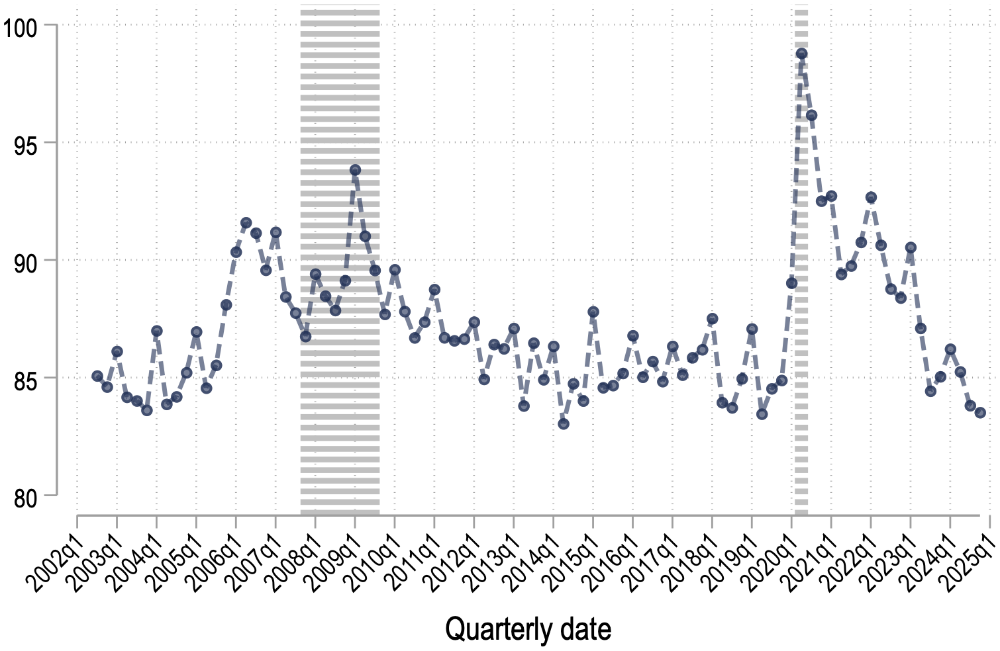
Notes: The figure shows the percentage of earnings calls that mention at least one of our 104 labor-related terms over time.
While these excerpts and their patterns signal the attention executives pay to the labor markets, they do not directly provide a quantitative measure of labor cost pressures. Our next step is to organize these discussions into structured topics and to quantify each topic’s importance for labor cost pressures separately. We employ two complementary approaches: supervised and unsupervised.
In the supervised approach we use our judgment and manual reading of excerpts to define a small number of interpretable labor topics, such as higher labor costs or labor shortages. We then build dictionaries that map sentences into these topics, following the procedure in Hassan et al. (2024a). This supervised strategy produces transparent and easily interpretable topics with clear links to economic concepts.
In the unsupervised approach we let the data speak more freely. We represent each labor-related sentence using pre-trained sentence embeddings and apply principal component analysis to the resulting high dimensional vectors. This yields a set of latent labor topics that are estimated purely from textual patterns. We then replicate our main analysis using these unsupervised topics. Comparing results across both approaches confirms that our findings are not driven by particular supervised labels and show that the information we extract is also present in more flexible data-driven representations of labor discussions.
2.1 Supervised Approach
From reading a random sample of transcripts, we identify five core topics: labor costs, labor shortages, headcount, labor efficiency and labor agreements. When discussing labor costs, headcount and efficiency, the executives also qualify the direction of shift—higher or lower—yielding eight topics total.
To label these topics automatically, we develop dictionaries for each topic following Hassan et al. (2024a). We begin with a small set of seed keywords that directly relate to each topic. For instance, for the topic of labor shortages, we started with words like labor and shortage. Similarly, for labor costs, we considered terms such as wage and compensation. To expand our initial keyword list, we employ word embeddings trained on the earnings call transcripts Pennington et al. (2014). This helped us identify additional words and phrases used in similar contexts. For example, the embedding model suggested terms like personnel shortage and staffing constraints as contextually similar to labor shortage.
In parallel, we manually review excerpts to identify additional frequently used terms missed by the embedding model. To ensure relevance, we extract 10 excerpts containing each candidate keyword from our dataset and manually assess whether they aligned with the intended topic. We retain a keyword in the dictionary for a topic if at least 70% of the sampled excerpts are correctly classified under that topic (i.e., true positives). If a keyword is found to be frequently ambiguous or misclassified, it is either discarded or reassigned to a different topic where it is more relevant. We repeat this process iteratively, adding to the keyword lists with each iteration until no additional keywords emerge. Table A.2 shows the top 20 keyword combinations for each topic from a total of 13,566 keyword combinations across all topics.
Our classification model operates at the sentence level following Hassan et al. (2024a). A sentence is assigned to a topic if it contains all the constituent words from one of that topic’s keyword combinations. For instance, a sentence is categorized under ‘labor shortage’ if it includes both the keywords ‘labor’ and ‘shortage’, regardless of the order or distance between them. We then aggregate across the earnings call transcript, defining firm \(i\)’s exposure to topic \(j\) of labor-related issues in quarter \(t\) \(\Lambda _{it}^{j}\), as the percentage of sentence in an earnings call transcript which mention a topic \(j\).
Figure 2 shows the incidence of these topics in earnings conference calls. These topics have significant overlaps as executives discuss multiple topics in a call. At least one of these topics is mentioned in 62% of earnings conference calls, accounting for 70.4% of overall executive discussions of labor-related terms. The four most prominent topics are higher and lower labor costs, and higher and lower head counts (hiring and firing). These four topics themselves are mentioned in 60% of earnings calls.
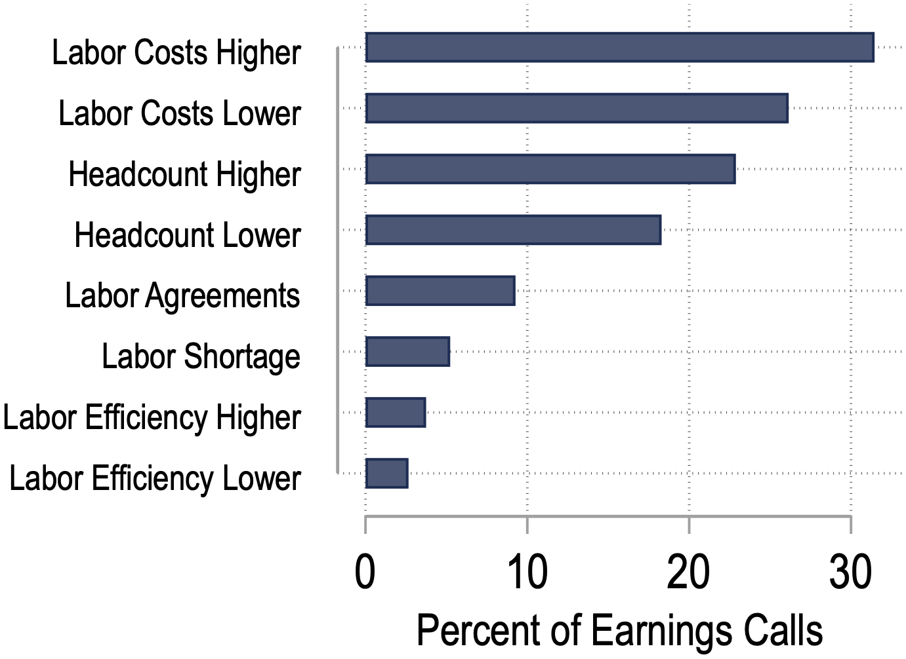
Notes: The figures show percentage of earnings calls by labor topic between 2002 and 2025.
2.1.1 Validation of Labor Topic Discussions
We validate that these topics capture genuine labor market conditions by showing that time-series patterns align with business cycles and industry-level topic intensity predicts wage growth for new hires.
Figure A.1 shows each topic evolves cyclically from 2002 to 2025. Discussions of higher labor costs and hiring peaked before the Great Recession, while mentions of lower costs and layoffs surged during downturns. Most striking is the post-pandemic period, when labor shortage discussions reached levels nearly four times higher than any previous peak.
Figure 3 confirms these topics correlate with standard indicators as expected: labor shortages, higher costs, and hiring correlate positively with labor market tightness (V/U ratio), output gap, and the Employment Cost Index, and negatively with unemployment. Discussions of lower costs and layoffs show the opposite pattern.
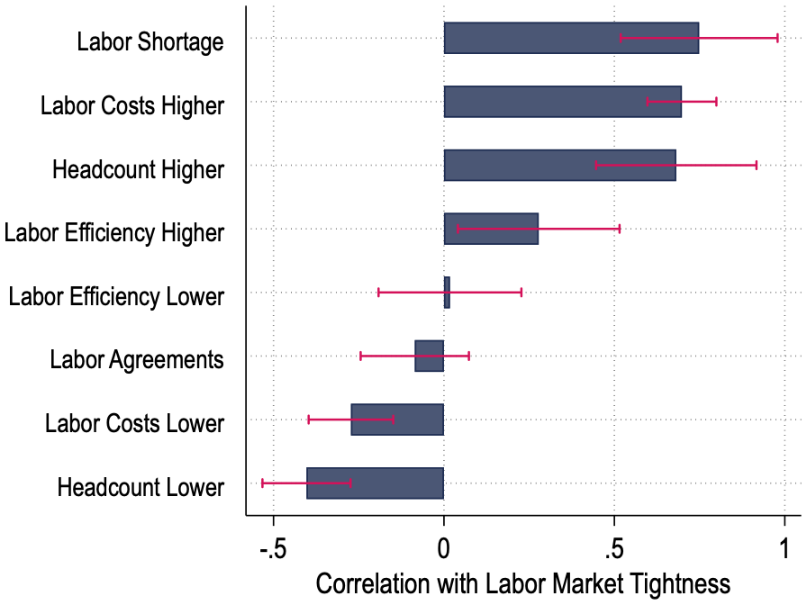
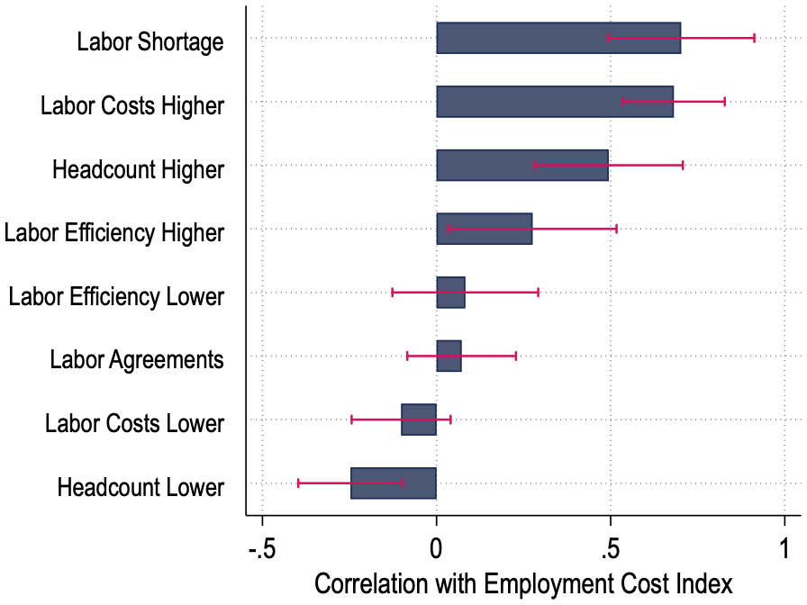
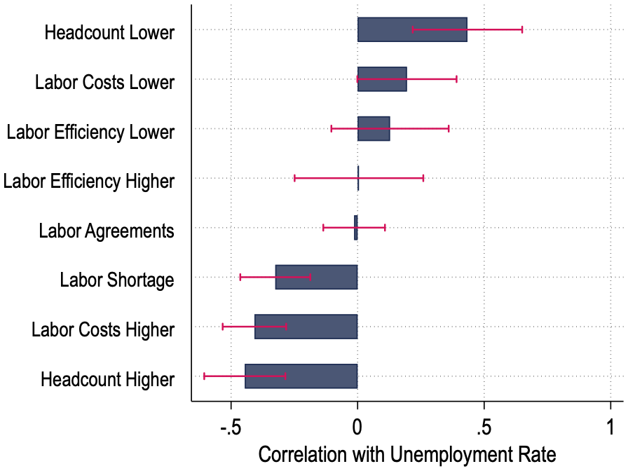
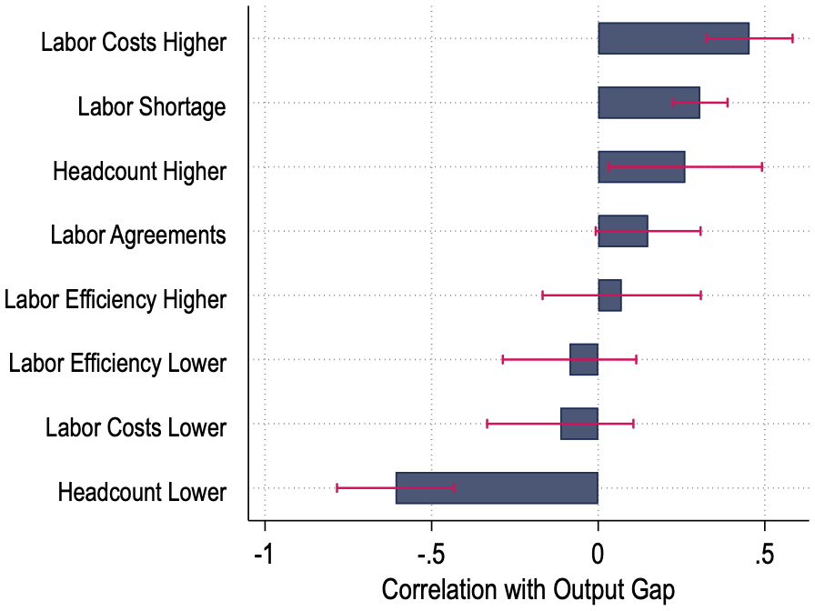
Notes:
The table shows piecewise correlations of tightness (calculated as the ratio of postings to vacancies),
unemployment rate, employment cost index, and output gap with labor topics. Each coefficient is calculated
using a regression of one labor market indicator (standardized) on one labor topic (standardized).
Observations are quarterly. To construct labor topic observations at the quarter level we take sales weighted
averages across firms who hold earnings calls in a quarter. Standard errors are robust.
We also investigate how labor-related discussions in earnings calls relate to wage growth for new hires at the industry level. Table A.3 shows that industry-level discussions of higher labor costs strongly predict wage growth for new hires (coefficients 0.62 to 1.58), while mentions of lower costs show negative associations (–0.47 to –1.39). These relationships survive industry and time fixed effects, demonstrating our measures capture meaningful variation in labor market tightness beyond what aggregate time trends or industry composition explain.
2.2 Unsupervised labor topics from sentence embeddings
The supervised topics are transparent and easy to interpret but they rely on our subjective and predefined set of categories. As a complementary approach, we also construct unsupervised labor topics using sentence embeddings.
We employ pre-trained sentence embeddings to convert each labor-related sentence into a high-dimensional vector that captures its meaning. These vectors can be viewed as coordinates in a space where semantically similar sentences lie close to each other. The pre-trained model used in our analysis is Sentence T5 by Google Research (Ni et al. (2021)). This model maps each sentence into a 768 dimensional vector and performs well on semantic textual similarity tasks and to outperform Sentence BERT (Reimers and Gurevych (2019)).
Let \(x_{itl}\) denote the 768-dimensional embedding of sentence \(l\) in firm \(i\) at time \(t\). To reduce number of dimensions, we apply principal component analysis to a stack all such vectors for all labor-related sentences across firms and time and to the resulting matrix. We interpret the first \(K\) principal components as orthogonal latent labor topics. The loading of sentence \(l\) on component \(k\) measures how strongly that sentence expresses latent topic \(k\).
We consider a range of values for \(K\) equal to 2, 4, 6, 8, 10, 20, 30, 40, and 50. For each choice we compute call-level topic shares by averaging the component scores for all sentences in a call and we standardize these shares. This gives a set of unsupervised topic variables that play the same role as the supervised topics.
We then replicate our full analysis using these unsupervised topics in place of the supervised ones: constructing firm level and aggregate measures of labor cost pressures, estimating the same forecasting regressions, and analyzing the inflation pass-through. The comparison of results across the two approaches confirms our main findings are not driven by the choice of supervised labels and that the information content of labor discussions is also present in purely data driven topic structures derived from sentence embeddings. In the main text, we focus primarily on the supervised approach, highlighting differences with the unsupervised approach where relevant. Results from unsupervised approach are presented in Appendix tables and figures, and referenced in the main text when relevant.
3 Theoretical Framework
While our textual analysis of earnings calls provides rich descriptive evidence of labor market pressures, we need a more structured approach to quantify their economic importance on a firm’s marginal costs. In this section we develop a framework through the firm’s profit maximization problem with generalized labor costs, which capture both direct wage costs and indirect labor expenses, such as job posting, hiring, training, and retention costs. This framework recognizes that firms facing labor market pressures incur multiple types of costs as they attempt to expand their effective workforce as we have seen in the discussions of labor topics in the previous section.
In our framework, firm \(i\) in quarter \(t\) simultaneously chooses between its quantity of intermediate inputs, \(M_{i,t}\), and its target headcount, \(\bar{L}_{i,t}\). The key friction is that effective labor input, \(L_{i,t} = \mu _{i,t} \bar{L}_{i,t}\), where \(0 \leq \mu _{i,t}\leq 1\) is the idiosyncratic ‘job filling’ shock:
\[ \begin{aligned} \max _{M_{i,t}, \bar{L}_{i,t}} P(Y_{it})F_{t}(M_{it},\mu _{i,t}\bar{L}_{it},\Omega _{it})&-x_{t}^{M}M_{it}-w(\bar{L}_{it})\mu _{i,t}\bar{L}_{it}-C(\bar{L}_{it}) \end{aligned} \]
Output (\(Y_{it}\)) is produced using two inputs, intermediate inputs (\(M_{it}\)) and effective labor (\(L_{it}=\mu _{i,t}\bar{L}_{it}\)), according to the common production function \((F_{t})\). \(\Omega _{it}\) denotes idiosyncratic productivity shocks. The firm faces a demand curve that determines the price (\(P_{it}\)) as a function of its output level.6 On the cost side, intermediate inputs are the flexible input (á la Gandhi et al. (2020)) and represent materials, supplies, and other variable inputs excluding labor and are purchased at price, \(x_{t}^{M}\).
However, the labor decision is more nuanced than in standard models. Firms must distinguish between two labor-related quantities: the number of positions they create or workers they aim to hire (\(\bar{L}_{it}\)) and the effective labor input that actually contributes to production (\(L_{i,t} = \mu _{i,t}\bar{L}_{it}\)). This distinction captures hiring frictions and new-hire training costs. For labor costs, the wage function \(w(\bar{L}_{it})\) determines the base wage costs and may reflect the firm-specific labor supply curve and its influence on wages, particularly in markets where it has significant hiring power. The function \(C(\bar{L}_{it})\) captures additional labor-related expenses such as recruitment, vacancy posting, training, signing bonuses, etc.
Unlike the typical firm problem with only direct wage costs of labor, the marginal cost of labor in this framework is given by:
\[ \begin{aligned} MCL_{it}=w(\bar{L}_{it})+\underbrace{\frac{w_{\bar{L}}\left (\bar{L}_{it}\right)L_{i,t}}{\mu _{i,t}}}_{\text{Wage pressure}}+\underbrace{\frac{C_{\bar{L}}\left (\bar{L}_{it}\right)}{\mu _{i,t}}}_{\text{Hiring/training costs}} = w(\bar{L}_{it}) + \lambda _{i,t}\left (\bar{L}_{it}, \mu _{i,t}\right) \end{aligned} \]
where \(\lambda _{i,t}^L=\lambda _{i,t}\left (\bar{L}_{it}, \mu _{i,t}\right)\) is the additional marginal cost of hiring workers over and above the wage costs. Changes in \(MCL_{it}\) are a key object for many firm decisions. For example, from the first order condition (FOC) with respect to labor input \(L_{it}\), one can show that under flexible prices the pass-through rate of changes in marginal labor cost to prices is one:
\[ \begin{aligned} \log \left (P_{it}\right) & = \underbrace{\log \left (\frac{\epsilon _{it}}{\epsilon _{it}-1}\right)}_{\text{Markup} (\eta _{it})} + \underbrace{\log \left (w\left (\bar{L}_{it}\right)+\lambda _{it}^{L}\right)}_{\text{Marginal cost of labor}} - \underbrace{\log \left (Y_{it}/L_{it}\right)}_{\text{Labor productivity}} - \underbrace{\log \left (\alpha _{it}^{L}\right)}_{\text{Output elasticity}}, \\ \Delta \log \left (P_{it}\right) & = \Delta \log \left (w\left (\bar{L}_{it}\right)+\lambda _{it}^{L}\right) - \Delta \log \left (Y_{it}/L_{it}\right) - \Delta \log \left (\alpha _{it}^{L}\right) - \Delta \log \left (\eta _{it}\right) \end{aligned} \]
where \(\epsilon _{it}\) is the price elasticity of demand and \(\alpha _{it}^{L}=\frac{\partial Y_{it}}{\partial L_{it}}\frac{L_{it}}{Y_{it}}\) is the output elasticity of labor.
Despite its central role in firm’s decisions, measuring changes in marginal labor costs presents a challenge since financial data does not provide such detailed breakdowns. To this end, we manipulate the optimality conditions with respect to intermediate and labor inputs:
\[ \begin{aligned} \frac{\partial Y_{i,t}/\partial L_{i,t}}{\partial Y_{i,t}/\partial M_{i,t}} &= \frac{MCL_{i,t}}{x^M_t} \Rightarrow \frac{x_{t}^{M}M_{it}}{P_{i,t}Y_{it}} = \frac{\left (w\left (\bar{L}_{it}\right)+\lambda _{it}^{L}\right)L_{it}}{P_{i,t}Y_{it}} \cdot \frac{\alpha _{it}^{M}}{\alpha _{it}^{L}} \Rightarrow \\ \underbrace{\Delta \log s_{it}^{M}}_{\text{$M$-share}} & = \underbrace{\Delta \log \left (w\left (\bar{L}_{it}\right)+\lambda _{it}^{L}\right)}_{\text{Marginal cost of labor}} - \underbrace{\Delta \log \frac{P_{i,t}Y_{it}}{L_{it}}}_{\text{Revenue per worker}} + \underbrace{\Delta \log \frac{\alpha _{it}^{M}}{\alpha _{it}^{L}}}_{\text{Output elasticities}}, \end{aligned} \]
where \(\alpha _{it}^{M}=\frac{\partial Y_{it}}{\partial M_{it}}\frac{M_{it}}{Y_{it}}\) is the output elasticity of intermediate input and \(s_{it}^{M}\) is the revenue share of intermediate input cost.7
Our theoretical framework provides a clear, testable prediction: when a firm faces rising marginal labor costs (our unobservable \(\mu _{it}\) shock), it will substitute away from labor and towards other variable intermediate inputs. This substitution will, all else equal, increase the share of revenue spent on intermediate inputs (\(s^M_{it}\)). This relationship is the key to estimating our measure. While Compustat does not report marginal labor costs, our textual analysis of earnings calls provides a rich, high-frequency proxy for the pressures driving them (\(\Lambda _{it}\)).
We can therefore quantify the economic significance of these discussions by directly estimating their impact on the intermediate inputs share. This leads to our core empirical specification, which rearranges the first-order condition from Equation (4):
\[ \Delta \log \left (w\left (\bar{L}_{it}\right)+\lambda _{it}^{L}\right)=f(\Lambda _{it})+\varsigma _{it}, \]
where \(\Lambda _{it}=[\Lambda _{it}^{1},\Lambda _{it}^{2},...,\Lambda _{it}^{8}]^{\prime}\) is an array of firm \(i\)’s exposure to topic \(k\) of labor-related issues in quarter \(t\)—\(\Lambda _{it}^{k}\)—, which is measured as the count of instances of keywords normalized by the length of the call (see Section 2). Therefore, in our empirical specification we project changes in firms’ intermediate input revenue shares onto their exposure to labor topics and estimate \(\omega _{it}=f(\Lambda _{it})\) in the below equation:
\[ \underbrace{\Delta \log s_{it}^{M}}_{\text{M-share}}=\underbrace{f(\Lambda _{it})}_{\omega _{it}}-\underbrace{\Delta \log \frac{P_{i,t}Y_{it}}{L_{it}}}_{\text{Revenue per worker}}+\epsilon _{it}, \]
where \(\epsilon _{i,t}\) denotes the error term that absorbs changes in output elasticities and measurement error as well as possible variation in utilization of inputs.
This regression approach converts our textual data from earnings calls into quantifiable estimates of labor cost pressures. It provides an economically grounded method for condensing the complex, multidimensional information in earnings calls into a single meaningful measure. By using the regression coefficients as weights, we create a composite measure that captures how different labor-related discussions contribute to overall firm costs. This approach yields a comprehensive labor cost pressure measure that weights each topic’s mention according to its estimated impact on firms’ cost structures, combining the rich qualitative information from earnings calls into a single, economically interpretable metric. Finally, the theoretical framework also mitigates overfitting—a pervasive problem in high-dimensional textual analysis (Gentzkow et al., 2019).
One might consider an alternative ‘residual approach’, where labor cost pressures are defined as the unobserved component from a regression of intermediate inputs’ revenue share on revenue per worker. However, such an approach suffers from a critical drawback. While our method uses external, independently measured topic signals on the right hand side and only requires that this signal is not systematically correlated with other unobservables after including fixed effects. The residual approach requires a much stronger and less plausible assumption. Specifically, it assumes that any variation in intermediate inputs’ revenue share not explained by revenue per worker is variation in labor cost pressures, thereby mechanically conflating the signal with all sources of noise and misspecification.
4 Estimating labor cost pressures, \(\omega _{it}\)
4.1 Data construction
Our estimation of each topic’s contribution to the marginal cost of labor in equation 6 relies on financial data from Compustat. However, Compustat lacks direct measures of intermediate inputs, so we employ two alternative measurement approaches following the previous literature.
Our primary approach, following Demirer (2022), creates a broad measure of variable intermediate inputs. We calculate this as the sum of cost of goods sold (COGS) and selling, general, and administrative expenses (SGA), from which we subtract depreciation (DP) and estimated wage expenditures (industry wages \(\times\) firm employment). While this approach is designed to capture a wide array of non-labor variable costs, the SGA component may contain some of the very indirect labor costs (e.g., recruitment, training) that our textual analysis is designed to identify. To ensure our results are not mechanically driven by this overlap, we construct a key variant of this measure that excludes SGA entirely. As we show, our findings are robust to this exclusion.
Our second approach, following Keller and Yeaple (2009), employs a narrower measure: changes in year-end raw materials inventory plus COGS (see Data Appendix for details). As before, we subtract estimated wage expenditures. The advantage of this approach is its clearly captures material expenditures. Reassuringly, our core estimates of labor cost pressures remain remarkably consistent across these two distinct measurement strategies.
For implementation, we note several additional details. First, since firm-level wage bills are not directly reported, we approximate them by multiplying a firm’s total employees by the average industry earnings from the Quarterly Census of Employment and Wages (QCEW). Second, because our input measures are constructed from annual financial statements, our baseline estimation is performed at an annual frequency. Finally, our sample excludes firms in financial and administrative industries (NAICS 52, 53, and 56) and uses firm-level data only through 2019 for the baseline estimation to avoid the unique confounding effects of the COVID-19 pandemic and inflation following the pandemic on cost structures.8
4.2 Labor cost pressures (\(\omega _{it}\)) estimates
We regress firms’ revenue shares of variable intermediate inputs on labor-related topics while controlling for firm and time fixed effects. We flexibly control for employment growth and sales growth to account for measurement error in reporting employment. To allow for flexible output elasticities—which could vary by industry and firm and over time (Hubmer et al., 2024)—we control for industry-year and firm fixed effects.9 In particular, we estimate equation 6 at the annual level using the following regression specification.
\[ \Delta \log s_{i,t}^{M}=\underbrace{\sum _{k}\beta _{k}^{topic}\Lambda _{i,t}^{k}}_{\omega _{it}}+\beta _{1}\Delta log(Emp_{i,t})+\beta _{2}\Delta log(Sales_{i,t})+\delta _{jt}+\varepsilon _{it}. \]
| \(\Delta log(Intermediate \ Input/Sales)_{i,t}\) | |||||
| (1) | (2) | (3) | (4) | (5) | |
| Labor Costs Higher\(_{i,t}\) | 4.270*** | 3.981*** | 3.427*** | 3.580*** | 3.854*** |
| (0.613) | (0.604) | (0.675) | (0.686) | (0.731) | |
| Labor Costs Lower\(_{i,t}\) | –6.075*** | –6.437*** | –6.739*** | –6.685*** | –6.497*** |
| (0.973) | (0.971) | (1.008) | (1.044) | (1.014) | |
| Headcount Higher\(_{i,t}\) | –0.788 | –0.529 | 0.263 | 0.392 | 0.882 |
| (0.724) | (0.727) | (0.733) | (0.730) | (0.930) | |
| Headcount Lower\(_{i,t}\) | –0.981 | –0.365 | –0.188 | 0.444 | –0.764 |
| (1.032) | (1.029) | (1.038) | (1.075) | (1.162) | |
| Labor Shortage\(_{i,t}\) | 2.042 | 2.446 | 1.234 | 1.231 | 2.019 |
| (1.808) | (1.890) | (2.118) | (2.154) | (2.486) | |
| Labor Efficiency Higher\(_{i,t}\) | –1.061 | –1.838 | –2.899 | –2.883 | –3.636 |
| (2.821) | (2.774) | (2.928) | (3.011) | (3.146) | |
| Labor Efficiency Lower\(_{i,t}\) | 6.885** | 7.447** | 7.494** | 8.318** | 1.373 |
| (3.291) | (3.287) | (3.464) | (3.608) | (3.398) | |
| Labor Agreement\(_{i,t}\) | 1.013 | 0.813 | –0.425 | –0.696 | –0.441 |
| (1.102) | (1.082) | (1.112) | (1.167) | (1.247) | |
| Residual category\(_{i,t}\) | 0.374 | 0.286 | 0.520* | 0.556* | 1.056** |
| (0.282) | (0.285) | (0.312) | (0.333) | (0.421) | |
| \(R^2\) | 0.050 | 0.060 | 0.099 | 0.099 | 0.223 |
| N | 23,790 | 23,790 | 23,714 | 21,500 | 21,240 |
| Baseline Controls | Y | Y | Y | Y | Y |
| Time FE | N | Y | Y | Y | Y |
| Industry-Year FE | N | N | Y | Y | N |
| Sentiment and Risk | N | N | N | Y | Y |
| Firm FE | N | N | N | N | Y |
Notes: The table shows regression of changes in on labor topics. Each observation denotes a firm i and year t. To construct labor topic observations at the firm x year level we take averages across all quarters in a year. All specifications include controls for yearly changes in sales and employment. Columns (4) and (5) include controls for risk and sentiment. We exclude firms in financial and administrative industries (NAICS 52, 53 and 56). We only include firm level data till 2019 to exclude Covid-19 pandemic period. Standard errors are clustered by firm.
where \(s_{i,t}^{M}\) is the share of intermediate input and \(Emp_{i,t}\) and \(Sales_{i,t}\) are employee count and sales reported by firm \(i\) in year \(t\). Each topic score for topic \(k\) by firm \(i\) in year \(t\) is constructed by averaging over the topic scores calculated quarterly for each earnings conference call. \(\delta _{j,t}\) denotes various controls such as firm-level risk and sentiment scores, and industry, firm, and time fixed effects.
In this section we show the regression results when we use Demirer (2022)’s material measure (i.e., the sum of COGS and SGA minus DP and wage expenditures). The regression results for other measures of intermediate inputs—COGS minus imputed wage expenditures or COGS and material inventory additions—are remarkably similar (Table A.5). Table 2 shows the regression coefficients that relate labor topics to firms’ cost structures. We present five different specifications with progressively more stringent controls, ranging from a basic specification to one that includes firm fixed effects, time fixed effects, and additional controls for risk and sentiment. Using these coefficients, we calculate the estimated change in marginal costs of labor using:
\[ \omega _{it}=\sum _{k}\hat{\beta}_{k}^{topic}\Lambda _{k,i,t} \]
Magnitudes and statistical significance of these coefficients exhibit interesting variations. Specifically, discussions of higher labor costs are consistently strongly associated with increases in the intermediate input-to-sales ratio. The estimated coefficients range from 4.270 (s.e. = 0.613) in the baseline model without any controls to 3.854 (s.e.= 0.731) in our most restrictive specification that includes firm and time fixed effects. In our most restrictive specification, the coefficient remains highly statistically significant at the 1% level. Similarly, mentions of lower labor costs are linked to significant negative coefficients, ranging from -6.075 (s.e.=0.973) to -6.497 (s.e.=1.014).
Appendix table A.6 shows regressions with individual topics. The table shows that individually discussion of higher and lower labor costs, and decreasing headcounts are significantly associated with changes in intermediate input-to-sales ratio. However, these associations are sufficiently summarized in the discussion of higher and lower labor cost pressures and therefore are not statistically significant in our baseline table.
The stability of key coefficients across specifications for labor costs discussions, suggests these relationships are robust and not driven by unobservables at the firm, industry, or time level.
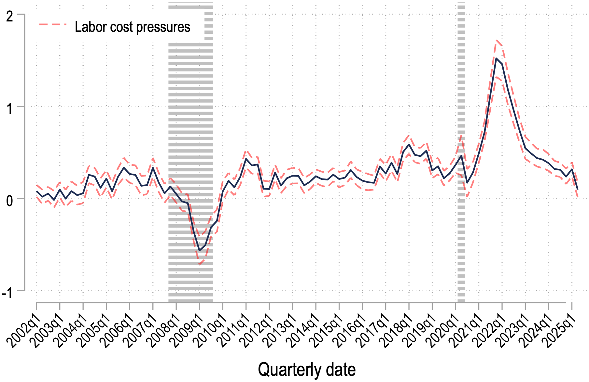
Notes: The figure shows the average change in estimated marginal cost of labor across firms by quarter
along with bootstrapped confidence intervals. The estimation uses coefficients from Table
2
and topic specific
scores by firm and by quarter. Bootstrapped confidence intervals are calculated by randomly leaving out
10% of the sample one at a time for the estimation procedure for 200 samples.
4.3 Time series variation of labor cost pressure (\(\omega _{t}\))
We first construct an aggregate measure of labor cost pressures (\(\bar{\omega}_{t}\)) as a sales-weighted average of our firm-level measure (\(\omega _{it}\)) to validate it against traditional macroeconomic indicators. Figure 4 shows our aggregate index.10 Following a sharp but short-lived collapse during the Great Recession, the index remained persistently low throughout the subsequent recovery. Consequently, it aligns more closely with the observed flattening of the Phillips curve (Powell, 2018). The index surged dramatically during and after the COVID-19 pandemic, surpassing its pre-recession peaks, corresponding to the steepening of the Phillips curve observed during this time (Domash and Summers, 2022).
| Macro Indicator | Contemporaneous | Max | Timing |
| Correlation | Correlation | of Max | |
| Labor Market Tightness | 0.749 | 0.837 | 2Q lead |
| Employment Cost Index | 0.636 | 0.766 | 3Q lead |
| Unemployment Rate | -0.458 | -0.623 | 4Q lead |
| Output Gap | 0.360 | 0.439 | 3Q lead |
Notes: This table reports the correlation between Labor Cost Pressures (LCP) and various macroeconomic indicators. Current Correlation shows the contemporaneous correlation. Max Correlation shows the highest absolute correlation found across leads and lags of -8 to +8 quarters. Timing of Max indicates whether LCP leads or lags the macro indicator at maximum correlation. Sample period: 2002Q1-2024Q4.
Table 3 presents both contemporaneous and lead-lag correlations between our Labor Cost Pressures measure and four key macroeconomic indicators: labor market tightness, the Employment Cost Index (ECI), unemployment rate, and output gap. The contemporaneous results show strong correlations with labor market tightness (0.75) and the ECI (0.64), consistent with our measure capturing fundamental labor market conditions. We also observe expected negative correlation with the unemployment rate (-0.46) and positive correlation with the output gap (0.36).
To assess the dynamic relationship between labor cost pressures and these indicators, we calculate correlations at leads and lags ranging from -8 to +8 quarters. The maximum correlation column reports the highest absolute correlation found across this range, with the timing column indicating the lead or lag at which this maximum occurs.
Critically, the lead-lag analysis reveals that our measure consistently leads these macroeconomic indicators by 2-4 quarters, with maximum correlations substantially stronger than contemporaneous relationships. It leads labor market tightness by 2 quarters (maximum correlation of 0.84), the ECI by 3 quarters (0.77), the unemployment rate by 4 quarters (-0.62), and the output gap by 3 quarters (0.44). This leading property suggests that firms’ discussions of labor cost pressures in earnings calls capture emerging labor market dynamics before they fully materialize in traditional aggregate statistics.
4.4 Firm-level variation in labor cost pressures (\(\omega _{i,t}\))
Are labor cost pressures broadly distributed across firms or concentrated among a few? Figure 5 shows the distribution of labor cost pressures over time, with firms classified into five categories based on standard deviations from the mean. Notably, for more than 75% of firms, labor cost pressures remain small between -1 and 1 standard deviations, indicating that substantial labor-related cost concerns are concentrated within a relatively small subset of firms at any given point.
The \(\omega _{i,t}\) distribution’s shape varies cyclically with labor market conditions. During tight labor markets—particularly around 2005–2006 and again in 2021–2022—the number of firms experiencing meaningful labor cost pressures (larger than one standard deviation) increases more than two fold, and the distribution becomes more positively skewed as its left tail shrinks and right tail expands. Conversely, during the slack labor market following the Great Recession (2011–2019), more firms reported minimal or negative labor cost pressures, and the distribution became more negatively skewed as its left tail expanded and right tail contracted. These patterns reveal that labor market tightness not only intensifies labor cost pressures among affected firms but also broadens their reach, drawing more firms into experiencing meaningful labor-related cost challenges.11
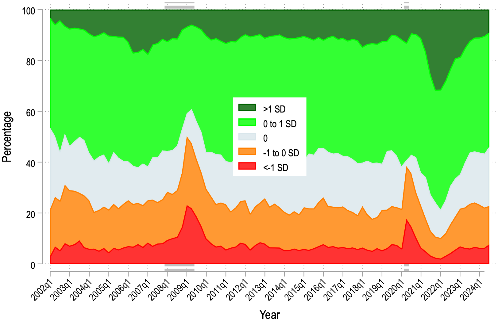
Figure: Figure 5: Distribution of Labor Cost Pressures across firms (\(\omega _{it}\))
Notes: The figure shows the distribution of change in estimated labor cost pressures across firms by quarter.
The estimation uses coefficients from Table
2
and topic specific scores by firm and by quarter. Different
colors show the distributions of labor cost pressures separated by 1 standard deviation.
Firms’ sensitivity to aggregate labor market conditions. Are some firms more sensitive to aggregate labor market conditions than others? To investigate this question consider the following equation:
\[ \omega _{it} = \alpha _i + \beta _i s_t + u_{it} \]
We make this pattern transparent by estimating
\[ \omega _{it} = \alpha _i + \varpi _t + \sum _{q=2}^{5} \beta _q \left (\mathbb{I}_{i \in q} \times Slack_t \right) + \varrho _{it}, \]
Notes: The figure plots the interaction coefficients of firm size quintiles (based on employment) with aggregate labor market
tightness (Panel A) and the unemployment rate (Panel B). The smallest quintile is the omitted base category. Confidence
intervals represent the 95% level.
These results in Figure 6 suggest that the effect of slack on marginal costs is both state dependent and firm specific. This evidence is consistent with models with a job ladder and frictional labor markets in which high productivity large employers adjust employment and wages more strongly over the business cycle than small firms (Moscarini and Postel-Vinay, 2012; Bilal et al., 2022; Berger et al., 2022; Berger et al., 2024). In those models tight labor markets lead large firms to expand and to bid up wages through poaching which raises their marginal labor costs more than for small firms.
While we have established that labor cost pressures are both state-dependent and firm-specific, neither aggregate nor firm-level variables explain much of the variation in labor cost pressures. Even when including Industry \(\times\) Size Quintile \(\times\) Time and Industry \(\times\) Growth Quintile \(\times\) Time fixed effects, less than 40% of the variation is explained (Table A.8). Therefore, we conclude that firm-level cost pressures reflect mostly idiosyncratic labor market conditions such as loss of key talent, localized wage competition, or firm-specific expansion plans.
5 Labor Cost Pressures and Inflation Pass-through
5.1 Estimating pass-through to PPI inflation
We begin by quantifying the pass-through of labor cost pressures (\(\omega _{it}\)) to Producer Price Index (PPI) inflation. To do so, we specify an equation by combining the marginal cost calculated at the firm level, and then taking a sales weighted average at the industry level. From Equation 5 with a log-linearized version of the pricing equation 3:
\[ \hat{P}_{i,t}=\beta _{p}\omega _{it}-\widehat{\left (Y_{it}/L_{it}\right)}-\hat{\alpha}_{it}^{L}-\hat{\eta}_{it}, \]
\[ \begin{aligned} \hat{P}_{n,t} & =\beta _{p}\sum _{i\in n}\theta _{i,t}\omega _{it}-\widehat{\left (Y_{nt}/L_{nt}\right)}-\hat{\alpha}_{nt}^{L}-\hat{\eta}_{nt}, \end{aligned} \]
where \(log(P_{n,t})=\sum _{i,t}\theta _{i,t}log(P_{i,t})\) is the aggregate price index for industry \(n\), and \(\theta _{i,t}\) denotes the sales share of firm \(i\) in industry \(n\) at time \(t\).
To estimate \(\beta _{p}\) and understand the dynamic response of prices to these pressures, we employ the following Jordà local projection specification:
\[ log(PPI_{n,t+h})-log(PPI_{n,t})=\alpha _{h}+\beta _{h}\bar{\omega}_{nt}+\sum _{k=1}^{3}\gamma _{k}\Delta log(PPI_{n,t-k})+\delta _{n,h}+\delta _{t,h}+\epsilon _{n,t+h} \]
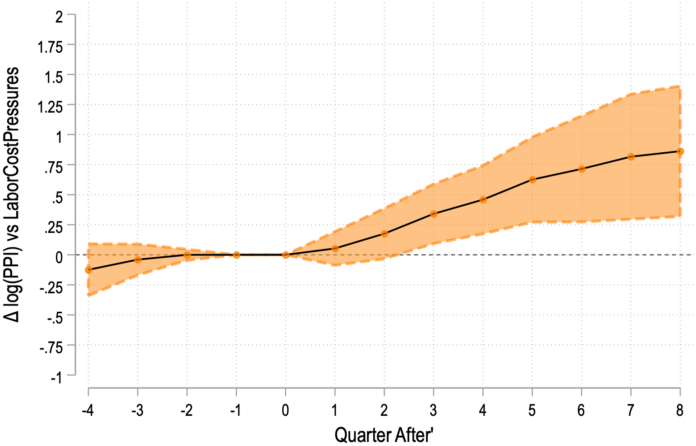
Notes: The figure plots estimated pass-through of labor cost pressures to PPI inflation (
\(\beta _h\)
) for horizons
\(h=0\)
to
\(8\)
. Shaded areas represent
95% confidence intervals. Standard errors are clustered by industry. The regression is weighted by the number of firms observed
within the industry. We exclude financial and administrative industries (NAICS 52, 53 and 56). Inflation is winsorized at the
2nd and 98th percentiles.
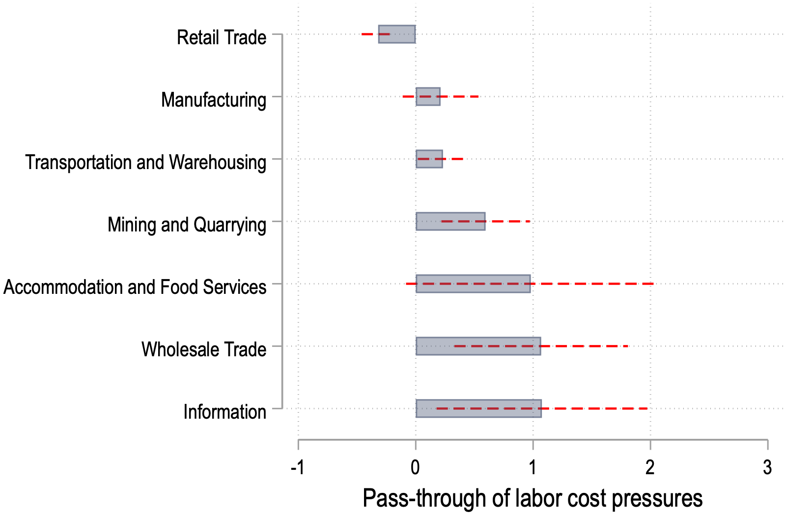
Notes: The figure plots estimated pass-through coefficients at horizon
\(h=4\)
of labor cost pressures to PPI inflation by 2-digit NAICS
industry. The plot shows estimates and 95% confidence intervals. Standard errors are clustered by industry.
In our analysis we use a panel of 2,832 industry-quarter observations (Table A.7). Figure 7 shows that these labor cost pressures take about 6-8 quarters to pass-through 86 percent of the increase in labor cost pressures to PPI inflation. Table A.7 shows regression coefficients with various specifications (with and without fixed effects), and shows a consistently positive and significant relationship between industry-level labor cost pressures and subsequent PPI inflation within the next four quarters. The coefficient on the labor cost pressure measure ranges from 0.387 to 0.493, indicating that a one percentage point increase in labor cost pressures is associated with roughly 0.493 percentage points higher PPI inflation four quarters later.
We check that these results are robust to calculating intermediate input shares using alternative methods, and that they are robust to calculating topics using the unsupervised approach. Table A.9 shows that these patterns remain largely unchanged with other measures of labor cost pressures calculated using alternative proxies for intermediate inputs or calculated using unsupervised approach. Figure A.4 shows that the pass-through estimates are quite stable for any chose number of principal components greater than 6.
We compare the pass-through of labor cost pressures against the pass-through of changes in ECI at the industry level in figure A.3 with the same Jorda projection specification. We find no significant pass-through of ECI on to PPI inflation.
However, this average effect masks significant heterogeneity. Figure 8 plots the interaction of the labor cost pressure coefficient with industry dummies. Industries with high labor intensity—such as Information, Wholesale Trade, and Accommodation and Food Services—exhibit significantly higher pass-through. Conversely, the pass-through for the manufacturing sector is near zero. These results align with Heise et al. (2022), who find significant wage-price pass-through in services but not in manufacturing. While they attribute the manufacturing disconnect to import competition and market concentration, our findings in Section 6 suggest that investment in automation provides an alternative explanation: manufacturing firms mitigate cost pressures through capital-labor substitution rather than price increases.
5.2 Aggregate Labor Cost Pressures and PCE Inflation
Having established the link between our measure and producer prices, we now examine its implications for aggregate consumer inflation. We construct an aggregate Labor Cost Pressure Index (\(\bar{\omega}_{t}\)) by weighting our industry-level measures using Personal Consumption Expenditures (PCE) industry weights.
Figure 9 plots this aggregate index alongside core PCE inflation. The correlation is striking. Our index captures the short-lived disinflation during the Great Recession and the rapid surge during the post-pandemic recovery. Quantitatively, assuming full pass-through to inflation, our measure can explain 19.5 percentage points of the 29.3 percentage point cumulative surge in inflation during the post-pandemic period (2021-22).
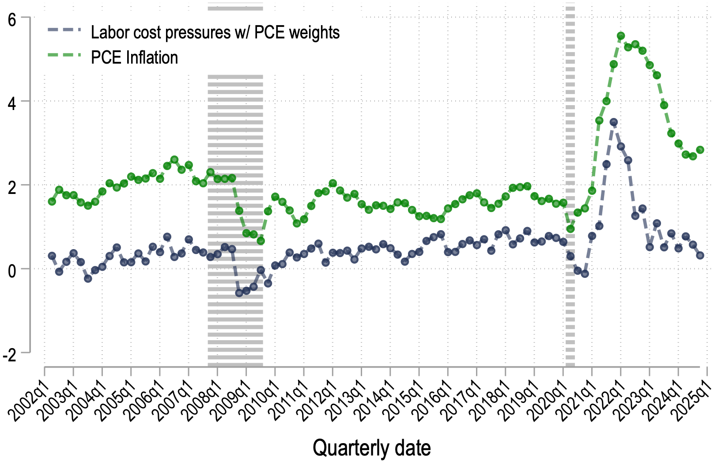
Notes: The figure shows our labor cost pressure index and the PCE inflation. To aggregate with PCE weights, we use industry
level aggregate at the NAICS 3 digit level and then aggregate up to quarterly level using PCE weights for each industry.
5.3 Phillips Curve Estimation
We formally test the explanatory power of our measure within a standard New Keynesian Phillips Curve framework. Following Barnichon and Shapiro (2024), we regress changes in core PCE inflation on a forcing variable (\(\hat{x}_t\)), controlling for long-run inflation expectations and past inflation:
\[ \begin{aligned} \pi _{t, t+4}=\alpha +\beta _{x}\hat{x}_{t}+\beta _{\pi}E_{t}\pi _{\infty}+\beta _{1}\pi _{t-4}+v_{t}, \end{aligned} \]
where \(\pi _{t, t+4}\) is the year-on-year percentage change in core PCE inflation, \(E_{t}\pi _{\infty}\) denotes long-run inflation expectations (from the Livingston survey), and \(\pi _{t-4}\) represents lagged inflation. We include lagged inflation to control for the persistence of price setting following Atkeson et al. (2001) and Stock and Watson (2008). We standardize all forcing variables to enable direct comparison.
We compare our Labor Cost Pressure Index (\(\bar{\omega}_{t}\)) against standard slack measures: the unemployment rate, labor market tightness (\(V/U\)), the CBO output gap, and the Employment Cost Index (ECI). Table 4 presents the results.
Table 4:
Phillips Curve Estimation
| Panel A: Push variables and Inflation | ||||||
| PCE Inflation\(_{t, t+4}\) | ||||||
| (1) | (2) | (3) | (4) | (5) | (6) | |
| Labor Cost Pressures\(_{t}\) | 0.343*** | |||||
| (0.119) | ||||||
| Tightness\(_{t}\) (std.) | 0.078 | |||||
| (0.114) | ||||||
| Unemployment Rate\(_{t}\) (std.) | 0.056 | |||||
| (0.080) | ||||||
| Output Gap\(_{t}\) (std.) | –0.157 | |||||
| (0.116) | ||||||
| ECI\(_{t}\) (std.) | 0.287 | |||||
| (0.196) | ||||||
| E-E-Flows\(_{t}\) (std.) | –0.266 | |||||
| (0.219) | ||||||
| \(R^2\) | 0.430 | 0.385 | 0.385 | 0.398 | 0.401 | 0.397 |
| N | 88 | 88 | 88 | 88 | 88 | 88 |
| Panel B: Comparison with Labor Cost Pressures | ||||||
| PCE Inflation\(_{t, t+4}\) | ||||||
| (1) | (2) | (3) | (4) | (5) | (6) | |
| Labor Cost Pressures\(_{t}\) | 0.343*** | 0.427*** | 0.382*** | 0.367*** | 0.320*** | 0.338*** |
| (0.119) | (0.145) | (0.120) | (0.118) | (0.121) | (0.120) | |
| Tightness\(_{t}\) (std.) | –0.188 | |||||
| (0.145) | ||||||
| Unemployment Rate\(_{t}\) (std.) | 0.124 | |||||
| (0.081) | ||||||
| Output Gap\(_{t}\) (std.) | –0.189* | |||||
| (0.102) | ||||||
| ECI\(_{t}\) (std.) | 0.227 | |||||
| (0.191) | ||||||
| E-E-Flows\(_{t}\) (std.) | –0.254 | |||||
| (0.210) | ||||||
| \(R^2\) | 0.430 | 0.437 | 0.440 | 0.450 | 0.440 | 0.442 |
| N | 88 | 88 | 88 | 88 | 88 | 88 |
Notes: The table reports OLS estimates of the Phillips Curve specification in equation 8. The dependent variable is PCE inflation over four quarters from \(t\) to \(t+4\). The labor cost pressure measure uses a combination of sales weights across firms and PCE weights across industries to aggregate up to a index of labor cost pressures at time \(t\). Standard errors are robust.
In single-variable regressions (Panel A), our measure exhibits the strongest relationship with future inflation (\(\beta =0.343, p<0.01\)) and the highest \(R^2\) (0.430). Traditional measures such as the output gap and ECI are statistically insignificant.12 In the “horse race” specifications (Panel B), our measure remains robust and statistically significant (coefficients ranging from 0.320 to 0.427) even when controlling for other slack variables. Notably, the traditional measures remain insignificant when included alongside our index, suggesting that our measure effectively subsumes the inflationary signal contained in standard aggregate indicators. Table A.10 shows that these patterns remain largely unchanged with other estimates of labor cost pressures calculated using alternative measures of intermediate inputs or calculated using unsupervised approach.13
Figure 10 helps explain this outperformance. It plots the relationship between our measure and traditional slack variables. The relationship is non-linear: labor cost pressures inferred from executive discussions remain muted over a large range of unemployment and tightness but spike sharply when unemployment falls roughly below 4% and tightness exceeds around 1.5. This convexity captures the non-linear nature of supply constraints that linear aggregate variables miss.
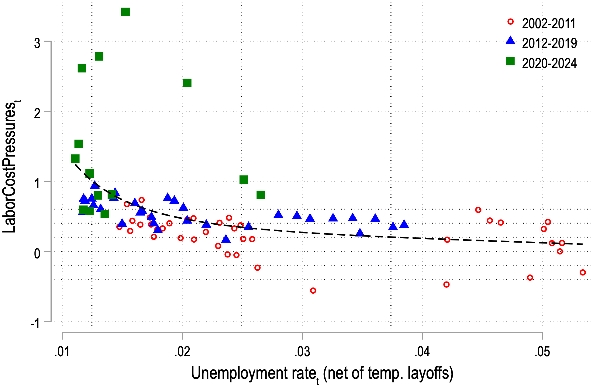
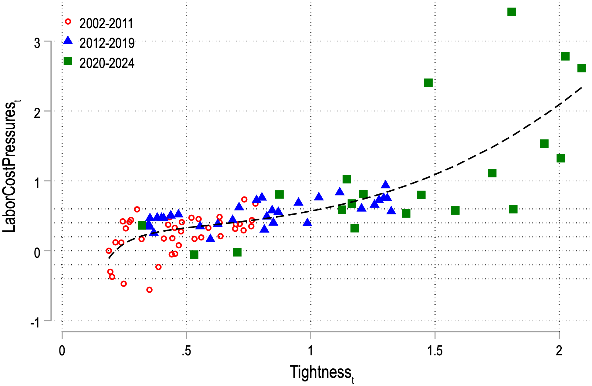
Notes: This figure plots the unemployment rate (net of temporary layoffs) and labor market tightness against our labor cost
pressure measure at the quarterly level.
5.4 Out-of-Sample Forecasting
To test the predictive power of our measure, we conduct a recursive pseudo-out-of-sample forecasting exercise. We employ a direct forecasting method with a horizon of \(h=4\) quarters.
For every quarter \(t\) in our evaluation period (2015Q1–2025Q1), we estimate the forecasting model using a rolling window of the most recent \(W=40\) quarters (10 years) of data available at time \(t\). Specifically, the information set available at time \(t\) includes labor cost pressures and controls up to time \(t\), but realized 4-quarter-ahead inflation (\(\pi _{s, s+4}\)) is only observed up to \(s = t-4\). Therefore, the estimation sample for a forecast originating at time \(t\) consists of observations \(\tau \in [t-W-4, t-4]\).
We estimate the following predictive regression for our proposed measure:
\[ \pi _{\tau, \tau +4} = \alpha _t + \beta _{\omega, t} \bar{\omega}_{\tau} + \beta _{\pi,t} E_{\tau}\pi _{\infty} + \beta _{lag,t} \pi _{\tau -4, \tau} + v_{\tau}, \]
where the subscript \(t\) on the parameters (\(\beta _{\cdot, t}\)) indicates that they are re-estimated for each rolling window. We then generate the out-of-sample forecast for time \(t+4\) using the current realized values:
\[ \hat{\pi}_{t+4|t} = \hat{\alpha}_t + \hat{\beta}_{\omega, t} \bar{\omega}_{t} + \hat{\beta}_{\pi,t} E_{t}\pi _{\infty} + \hat{\beta}_{lag,t} \pi _{t-4, t}. \]
Theory vs. Raw Text. A key contribution of our paper is utilizing the firm’s cost minimization problem to aggregate the eight labor-related topics into a single sufficient statistic, \(\omega _{it}\). To validate this theoretical restriction, we compare our model against a “Raw Text” benchmark that includes the eight topic frequencies directly in the forecasting equation without the theoretical weights:
\[ \pi _{\tau, \tau +4} = \alpha _t + \sum _{k=1}^{8} \gamma _{k, t} \Lambda ^k_{\tau} + \beta _{\pi,t} E_{\tau}\pi _{\infty} + \beta _{lag,t} \pi _{\tau -4, \tau} + \eta _{\tau}, \]
where \(\Lambda ^k\) represents the aggregate frequency of topic \(k\) (e.g., “Labor Shortage”, “Wage Inflation”). While Equation 9 utilizes the same textual information, it requires estimating eight separate coefficients (\(\gamma _{k,t}\)), potentially leading to overfitting. In contrast, our measure \(\bar{\omega}_t\) projects these topics onto material shares first, effectively ”pre-weighting” them based on their economic impact on marginal costs.
We evaluate performance using the Root Mean Squared Error (RMSE) over the evaluation sample \(T_{eval}\):
\[ RMSE = \sqrt{\frac{1}{T_{eval}} \sum _{t \in T_{eval}} \left (\pi _{t, t+4} - \hat{\pi}_{t+4|t} \right)^2} \]
Table 5 reports the results. Our structural measure achieves an RMSE of 0.646, significantly outperforming the “Raw Text” model, which has an RMSE of 2.176. This massive divergence confirms that the structure imposed by the firm’s first-order condition is essential; without it, the high-dimensional textual data leads to severe overfitting and poor out-of-sample performance.
Furthermore, our measure consistently outperforms traditional slack indicators. It reduces forecast error by 25% relative to the Unemployment Rate (0.861) and by roughly 30% relative to Labor Market Tightness (0.923) and the Output Gap (0.885). Finally, our measure also outperforms the “Theory Residual” approach (RMSE 0.807)—the residual intermediate input share after controlling for revenue per worker and firm and industry fixed effects. This confirms that the textual projection successfully isolates the specific labor cost signal from other unobserved production shocks.
Table 5:
Forecasting Performance: Root Mean Squared Error (2015–2025)
| Model | RMSE | Relative to Unemp. |
| Labor Cost Pressures | 0.645 | 0.75 |
| Raw Text (8 Topics) | 1.975 | 2.29 |
| Theory Residual | 0.807 | 0.94 |
| Tightness (V/U) | 0.923 | 1.07 |
| Unemployment Rate | 0.861 | 1.00 |
| Output Gap | 0.885 | 1.03 |
| Employment Cost Index | 1.203 | 1.40 |
| Labor Cost Pressures with 25 PCA topics | 0.865 | 1.00 |
| Labor Cost Pressures with 50 PCA topics | 0.751 | 0.87 |
Notes: The table reports the Root Mean Squared Error (RMSE) for core PCE inflation forecasts four quarters ahead. The evaluation period is 2015–2025. Models are estimated using a rolling 10-year window. The ”Relative to Unemp.” column reports the ratio of the model’s RMSE to the RMSE of the Unemployment Rate model.
5.5 Decomposing Inflation: Systematic vs. Idiosyncratic Pressures
Our variance decomposition (Table A.8) showed that most variation in labor cost pressures is firm-specific. A key question is whether this idiosyncratic variation aggregates to affect inflation, or if only the systematic component driven by the business cycle matters. Empirically, we isolate these components by regressing \(\omega _{it}\) on aggregate slack and estimating firm level betas and error terms using \(\omega _{it} = \alpha _i + \beta _i Slack_t + u_{it}\), as we did in Section 4.4. These \(\beta _i\)’s indicate the sensitivity of a firm’s labor cost pressures to aggregate slack. We then aggregate the fitted values (\(\hat{\beta}_i \times Slack_t\)) using PCE industry weights and within industry sales weights to capture the systematic component of our aggregate index. Similarly, the aggregated residual (\(\epsilon _{it}\)) absorbs variation unexplained by this systematic component to aggregate labor market conditions, including the non-linear responses to labor constraints, nonlinear inflation dynamics in menu cost economies (e.g., Blanco et al. (2024)), or granular firm-level shocks to inflation (à la Gabaix (2011)).
Table 6:
Inflation Decomposition: Systematic vs. Idiosyncratic Pressures
| PCE Inflation\(_{t, t+4}\) | |||||||
| Total | Unemployment Decomposition | Tightness Decomposition | |||||
| (1) | (2) | (3) | (4) | (5) | (6) | (7) | |
| Total Labor Cost Pressures | 0.343*** | ||||||
| (0.119) | |||||||
| Systematic (\(\beta \times U_t\)) | –0.069 | 0.056 | |||||
| (0.221) | (0.224) | ||||||
| Idiosyncratic Residual | 0.397*** | 0.402*** | |||||
| (0.124) | (0.125) | ||||||
| Systematic (\(\beta \times V/U_t\)) | 0.154 | 0.211 | |||||
| (0.167) | (0.161) | ||||||
| Idiosyncratic Residual | 0.396** | 0.412*** | |||||
| (0.155) | (0.152) | ||||||
| \(R^2\) | 0.430 | 0.384 | 0.440 | 0.440 | 0.387 | 0.427 | 0.434 |
| N | 88 | 88 | 88 | 88 | 88 | 88 | 88 |
| Controls | |||||||
| Exp & Lag Inf | Y | Y | Y | Y | Y | Y | Y |
Notes: The table reports results from regressing PCE inflation on the systematic and idiosyncratic components of the Labor Cost Pressure index. The Systematic Component is constructed by aggregating firm-level predicted values based on firm sensitivity to aggregate slack multiplied by aggregate slack (Unemployment or Tightness). The Idiosyncratic Component is constructed by aggregating firm-level residuals after subtracting the systematic component. All independent variables are standardized. Standard errors are robust.
Table 6 presents the results of forecasting PCE inflation using these components in equation 7. The results yield three specific insights into the nature of inflationary pressures. First, the idiosyncratic component is a robust and economically large driver of inflation. In Column (3), the coefficient on the residual is 0.397 and statistically significant at the 1% level. Second, the systematic component provides no incremental predictive power beyond standard controls. In Column (2), the coefficient on the systematic component (constructed via the unemployment rate) is -0.069 and statistically indistinguishable from zero. Similarly, in Column (5), the systematic component constructed via labor market tightness is insignificant (0.154). Table A.11 shows that these systematic components are statistically significant when we omit lagged inflation controls. The lack of statistical significance in our baseline specification suggests that the information contained in business cycle fluctuations is already fully captured by the persistence of inflation itself (\(\pi _{t-4}\)).
Third, the joint specifications (columns 4 and 7) show that when both components are included simultaneously, the idiosyncratic coefficient remains stable and large (\(\approx 0.40\)), while the systematic component remains insignificant. For instance, in Column (7), the idiosyncratic residual (\(0.412^{***}\)) clearly dominates the tightness-based systematic component (\(0.211\)). This dominance implies that the unique value-added of our granular measure stems entirely from its ability to capture the information that is absent in aggregate slack variables.
Finally, figure A.6 shows that a large part of the increase in inflation post-pandemic was also driven by this idiosyncratic component. These results suggest the importance of granular labor cost pressures and nonlinear responses to aggregate labor market conditions.
6 How do firms respond to labor cost pressures?
Our finding that manufacturing exhibits near-zero inflation pass-through from labor cost pressures suggests firms adjust through margins other than prices. We now exploit the firm-level nature of our measure to examine whether labor cost pressures trigger automation and productivity gains—particularly in industries where routine tasks make capital-labor substitution feasible.
Capital–labor substitution in production is central for many questions in economics, such as factor income shares (e.g., Karabarbounis and Neiman (2014)) or earnings distribution (e.g., Krusell et al. (2000)). Most models of labor demand imply that when firms face higher labor costs they adopt automation technologies (e.g., Acemoglu and Autor (2011); Acemoglu and Restrepo (2022a); Leduc and Liu (2024)).
We test this prediction using firm-quarter observations from Compustat, analyzing how labor cost pressures affect investment, R&D spending, and productivity. We use the following specification:
\[ log(CapEx_{i,t,t+4})=\alpha +\beta \omega _{i,t}+\gamma log(assets_{i,t-1})+\chi _{i,t}+\delta _{i}+\delta _{t}+v_{t}, \]
where \(\omega _{it}\) denotes labor cost pressures at the firm level observed in quarter t. \(log(CapEx_{i,t,t+4})\) denotes log capital expenditures between quarter t and t+4. \(\delta _{i}\)and \(\delta _{t}\) are firm and time fixed effects. We control for risk and sentiment in expressed in earnings conference calls following Hassan et al. (2024a). We focus on heterogeneity across industries with different levels of routine manual task intensity (Table 7 Panel A). The baseline specification (column 1) indicates that a percentage point increase in labor cost pressures is associated with a 2.58% increase in capital expenditure. The inclusion of various fixed effects and controls helps isolate the effect of labor cost pressures from other factors that might influence investment decisions, such as industry trends, macroeconomic conditions, and firm-specific characteristics.
Columns 2-3 reveal interesting heterogeneity across industry types based on their routine manual task intensity. High routine manual (HRM) industries show the strongest investment response to labor cost pressures (4.20%), followed by low routine manual (LRM) industries (2.24%), while medium routine manual (MRM) industries show the smallest response (1.89%). This pattern suggests that firms in industries with high routine manual task content are more likely to respond to labor cost pressures by increasing capital investment, consistent with greater opportunities for automation and capital-labor substitution in these industries.
Table 7:
Labor Cost Pressures and Investment, Firm x quarter Level
| Panel A: Capital Investment | ||||
| log(Capital Exp.\(_{i,t+1:t+4}\)) * 100 | ||||
| All | LRM | MRM | HRM | |
| (1) | (2) | (3) | (4) | |
| Labor Cost Pressures\(_{i,t}\) | 2.581*** | 2.238*** | 1.890*** | 4.203*** |
| (0.193) | (0.363) | (0.252) | (0.351) | |
| \(R^2\) | 0.920 | 0.889 | 0.934 | 0.914 |
| N | 148,510 | 45,360 | 61,459 | 41,532 |
| Panel B: R&D Investment | ||||
| log(R&D Exp.\(_{i,t+1:t+4}\)) * 100 | ||||
| All | LRM | MRM | HRM | |
| (1) | (2) | (3) | (4) | |
| Labor Cost Pressures\(_{i,t}\) | 0.556*** | 0.157 | 0.617** | 0.967*** |
| (0.175) | (0.318) | (0.251) | (0.362) | |
| \(R^2\) | 0.959 | 0.960 | 0.960 | 0.957 |
| N | 53,582 | 15,624 | 22,968 | 14,966 |
| Controls (Risk and Sentiment) | Y | Y | Y | Y |
| Time FE | Y | Y | Y | Y |
| Firm FE | Y | Y | Y | Y |
Notes: The table shows regression of log(Capital expenditures) reported by firm i between quarters t+1 and t+4 on labor cost pressures calculated for firm \(i\) in quarter \(t\). Each observation denotes a firm \(i\) and quarter \(t\). All columns include controls for risk, sentiment and log assets. We exclude firms in financial and administrative industries (NAICS 52, 53 and 56). Standard errors are clustered by firm.
We next examine how firms adjust their R&D expenditures in response to labor cost pressures, using a similar framework as the capital expenditure analysis (Table 7 Panel B). For the full sample of firms (columns 1-3), labor cost pressures show a positive and significant relationship with R&D spending. The effect is substantial, with a one percentage point increase in labor cost pressures associated with a 0.56% increase in R&D expenditure in the baseline specification. We find similar results to those observed for capital expenditures: firms in high routine manual industries invest in R&D at 7 times the rate compared to low routine manual industries. This finding, combined with the heterogeneous responses across industry types, indicates that firms’ technological capabilities and industry characteristics significantly influence their choice between capital investment and R&D as responses to labor cost pressures.
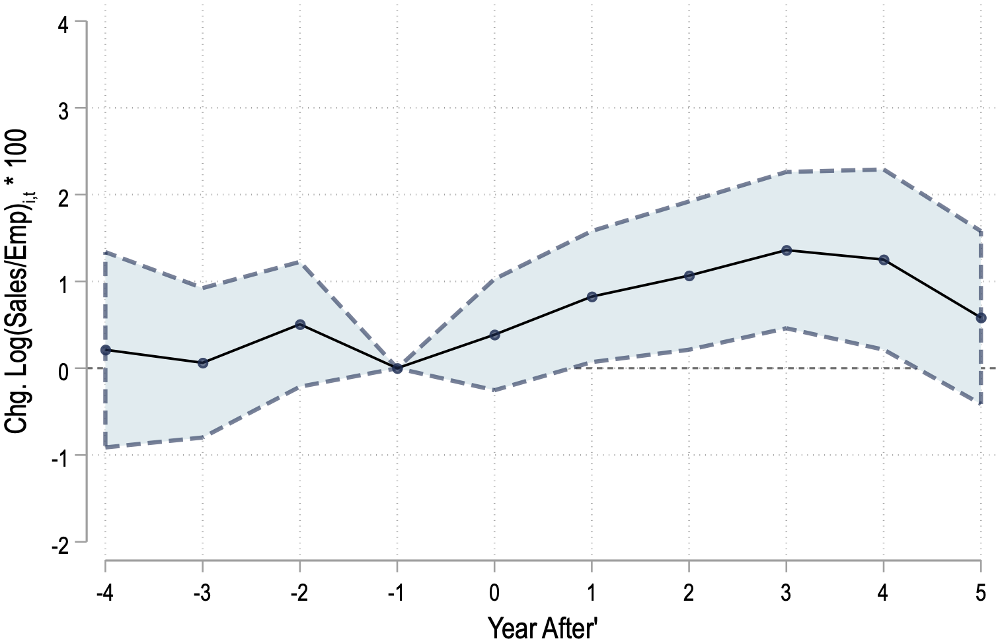
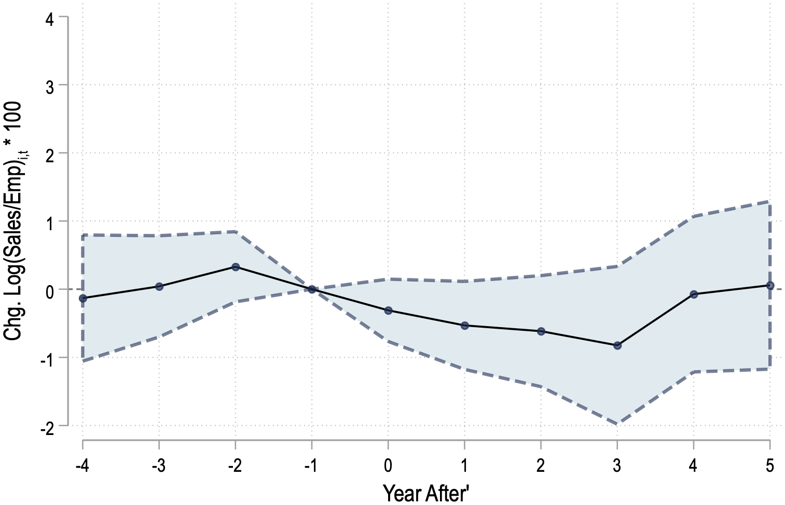
Do these investments translate into productivity gains? Figure 11 presents an event study analyses showing how labor productivity (measured as revenue per employee) responds to labor cost pressure episodes from 4 years before to 5 years after the shock, with confidence intervals shown by the dotted lines. Panel A, focusing on HRM industries, reveals a clear pattern of productivity gains following labor cost pressure episodes. While there is no significant pre-trend before the shock (years -4 to 0), productivity begins to increase notably around year 1 and continues to rise, reaching a peak of nearly 1% higher productivity by year 3. The effect remains positive and statistically significant through year 5, suggesting persistent productivity improvements in these industries following labor cost pressures.
In contrast, Panel B shows that low routine manual industries exhibit no significant productivity response to labor cost pressure episodes. The point estimates fluctuate around zero after increases in labor cost pressures, and the confidence intervals consistently include zero. This stark difference between HRM and LRM industries aligns with the earlier findings on investment and automation responses, suggesting that firms in HRM industries are more successful at converting their technological responses to labor cost pressures into actual productivity gains, likely through successful automation and capital-labor substitution.
These findings explain our earlier result that manufacturing shows near-zero inflation pass-through. When labor cost pressures hit, manufacturing firms—concentrated in HRM industries—respond by automating rather than raising prices. The capital deepening and productivity gains offset the cost shock. In contrast, service sectors with fewer automation opportunities must pass costs through to prices, generating the heterogeneous pass-through documented in Figure 8. The firm-level evidence thus provides a mechanism for the industry-level inflation patterns, highlighting how technological substitution possibilities shape the inflation consequences of labor market tightness.
7 Conclusion
Labor cost pressures have long been recognized as a fundamental driver of inflation since Phillips (1958). Yet, measuring marginal labor costs remains challenging because financial statements lack such detailed breakdowns. In this paper, we developed a novel methodology to address this challenge by combining textual analysis of earnings calls with economic theory. Our theory-based measurement approach aggregates multidimensional rich qualitative information into a single quantitative time-varying firm-level measure. The theoretical structure also prevents overfitting—a common pitfall when working with high-dimensional textual data.
We use this measure to examine the pass-through from labor cost pressures to inflation. First, when aggregated using PCE weights, our index outperforms conventional slack variables in forecasting core PCE inflation. Second, we find significant but heterogeneous pass-through to industry-level PPI inflation: the effect is strongest in services and near-zero in manufacturing. Third, exploiting firm-level granularity, we show that labor cost pressures prompt increased investment in industries with high share of routine manual workers, generating productivity gains that help explain manufacturing’s muted price response.
These results advance our understanding of inflation dynamics and offer practical tools for real-time monitoring. Policymakers could use our high-frequency measure to anticipate inflationary pressures earlier than traditional indicators allow. Our firm-level evidence reveals that labor cost pressures accelerate automation, particularly where capital-labor substitution is technologically feasible, with implications for both productivity growth and the distributional effects of tight labor markets. More broadly, our methodology demonstrates how economic theory can discipline textual analysis to measure hard-to-quantify firm-level variables, a framework applicable beyond labor costs.
8 References
Acemoglu, D. and Autor, D. H. (2011). Skills, tasks and technologies: Implications for employment and earnings. Handbook of Labor Economics, 4, 1043–1171.
— and Restrepo, P. (2022a). Demographics and automation. The Review of Economic Studies, 89 (1), 1–44.
— and — (2022b). Tasks, automation, and the rise in us wage inequality. Econometrica, 90 (5), 1973–2016.
Ahn, H. J., Cook, T. R. and Doh, T. (2025a). Bargaining over words? text analysis of a model of monetary policy by a committee. Federal Reserve Bank of Kansas City Working Paper.
—, —, —, Kastritis, E. and Wedewer, J. (2025b). Text sentiment about monetary policy. Federal Reserve Bank of Kansas City Working Paper No. RWP25-18.
Araujo, D., Bokan, N., Comazzi, F. and Lenza, M. (2025). Word2prices: embedding central bank communications for inflation prediction.
Arold, B. W., Ash, E., MacLeod, W. B. and Naidu, S. (2024). Do words matter? the value of collective bargaining agreements. Center for Law & Economics Working Paper Series, 6.
Ashwin, J., Kalamara, E. and Saiz, L. (2024). Nowcasting euro area gdp with news sentiment: a tale of two crises. Journal of Applied Econometrics, 39 (5), 887–905.
Atkeson, A., Ohanian, L. E. et al. (2001). Are phillips curves useful for forecasting inflation? Federal Reserve bank of Minneapolis quarterly review, 25 (1), 2–11.
Bagga, S., Mann, L. F., Şahin, A. and Violante, G. L. (2025). Job amenity shocks and labor reallocation. Tech. rep., National Bureau of Economic Research.
Baker, S. R., Bloom, N. and Davis, S. J. (2016). Measuring economic policy uncertainty. The quarterly journal of economics, 131 (4), 1593–1636.
Barnichon, R. and Shapiro, A. H. (2024). Phillips meets beveridge. Journal of Monetary Economics, 148, 103660.
Berger, D., Herkenhoff, K., Kostèl, A. R. and Mongey, S. (2024). An anatomy of monopsony: Search frictions, amenities, and bargaining in concentrated markets. NBER Macroeconomics Annual, 38 (1), 1–47.
—, — and Mongey, S. (2022). Labor market power. American Economic Review, 112 (4), 1147–1193.
Bilal, A., Engbom, N., Mongey, S. and Violante, G. L. (2022). Firm and worker dynamics in a frictional labor market. Econometrica, 90 (4), 1425–1462.
Blanco, A., Boar, C., Jones, C. and Midrigan, V. (2024). Non-linear inflation dynamics in menu cost economies. w32094.
Borusyak, K. and Jaravel, X. (2021). The distributional effects of trade: Theory and evidence from the united states. Tech. rep., National Bureau of Economic Research.
Buehlmaier, M. M. and Whited, T. M. (2018). Are financial constraints priced? evidence from textual analysis. The Review of Financial Studies, 31 (7), 2693–2728.
Chen, H., Cheng, Y., Liu, Y. and Tang, K. (2026). Teaching economics to the machines. NBER Working Paper.
De Loecker, J., Eeckhout, J. and Unger, G. (2020). The rise of market power and the macroeconomic implications. The Quarterly journal of economics, 135 (2), 561–644.
— and Warzynski, F. (2012). Markups and firm-level export status. American economic review, 102 (6), 2437–2471.
De Ridder, M., Grassi, B., Morzenti, G. et al. (2022). The hitchhiker’s guide to markup estimation.
Demirer, M. (2022). Production function estimation with factor-augmenting technology: An application to markups.
Domash, A. and Summers, L. H. (2022). How tight are US labor markets? Tech. rep., National Bureau of Economic Research.
Drechsel, T., McLeay, M. and Tenreyro, S. (2019). Monetary policy for commodity booms and busts.
Fitzgerald, T. J., Nicolini, J. P. et al. (2014). Is there a stable relationship between unemployment and future inflation?: Evidence from US cities. Citeseer.
Gabaix, X. (2011). The granular origins of aggregate fluctuations. Econometrica, 79 (3), 733–772.
Gagliardone, L., Gertler, M., Lenzu, S. and Tielens, J. (2023). Anatomy of the Phillips curve: micro evidence and macro implications. Tech. rep., National Bureau of Economic Research.
Galí, J. (2015). Monetary policy, inflation, and the business cycle: an introduction to the new Keynesian framework and its applications. Princeton University Press.
Galı, J. and Gertler, M. (1999). Inflation dynamics: A structural econometric analysis. Journal of monetary Economics, 44 (2), 195–222.
Gandhi, A., Navarro, S. and Rivers, D. A. (2020). On the identification of gross output production functions. Journal of Political Economy, 128 (8), 2973–3016.
Gentzkow, M., Kelly, B. and Taddy, M. (2019). Text as data. Journal of Economic Literature, 57 (3), 535–74.
Gormsen, N. J. and Huber, K. (2024). Firms’ Perceived Cost of Capital. Tech. rep., National Bureau of Economic Research.
Gorodnichenko, Y., Pham, T. and Talavera, O. (2021). Social media, sentiment and public opinions: Evidence from# brexit and# uselection. European Economic Review, 136, 103772.
—, — and — (2023). The voice of monetary policy. American Economic Review, 113 (2), 548–584.
Gosselin, M.-A. and Taskin, T. (2024). Textual Economic Indicators for Canada and the United States: Insights From Earnings Calls. Tech. rep., Bank of Canada Staff Discussion Paper.
Graetz, G. and Michaels, G. (2018). Robots at work. Review of economics and statistics, 100 (5), 753–768.
Hall, R. E. (1988). The relation between price and marginal cost in us industry. Journal of political Economy, 96 (5), 921–947.
— and Mueller, A. I. (2018). Wage dispersion and search behavior: The importance of nonwage job values. Journal of Political Economy, 126 (4), 1594–1637.
Harford, J., He, Q. and Qiu, B. (2024). Firm-level labor-shortage exposure. Available at SSRN 4410126.
Hassan, T. A., Hollander, S., Kalyani, A., van Lent, L., Schwedeler, M. and Tahoun, A. (2024a). Economic Surveillance using Corporate Text. Tech. rep., National Bureau of Economic Research.
—, —, Van Lent, L. and Tahoun, A. (2019). Firm-level political risk: Measurement and effects. The Quarterly Journal of Economics, 134 (4), 2135–2202.
—, —, van Lent, L. and Tahoun, A. (2023). Firm-level exposure to epidemic diseases: Covid-19, SARS, and H1N1. Review of Financial Studies, 34 (6), 2409–2449.
—, —, — and — (2024b). The global impact of Brexit uncertainty. Journal of Finance, 79, 413–458.
Hazell, J., Herreno, J., Nakamura, E. and Steinsson, J. (2022). The slope of the phillips curve: evidence from us states. The Quarterly Journal of Economics, 137 (3), 1299–1344.
Heise, S., Karahan, F. and Şahin, A. (2022). The missing inflation puzzle: The role of the wage-price pass-through. Journal of Money, Credit and Banking, 54 (S1), 7–51.
Howes, C., i Carreras, M. D., Coibion, O. and Gorodnichenko, Y. (2026). How Monetary Policy Is Made: Lessons from Historical FOMC Discussions. Tech. rep., National Bureau of Economic Research.
Hubmer, J., Chan, M., Ozkan, S., Salgado, S. and Hong, G. (2024). Scalable versus Productive Technologies. Tech. rep., Penn Institute for Economic Research, Department of Economics, University of Pennsylvania.
Hwang, H.-s., Mortensen, D. T. and Reed, W. R. (1998). Hedonic wages and labor market search. Journal of Labor Economics, 16 (4), 815–847.
Karabarbounis, L. and Neiman, B. (2014). The global decline of the labor share. The Quarterly journal of economics, 129 (1), 61–103.
Krusell, P., Ohanian, L. E., Ríos-Rull, J.-V. and Violante, G. L. (2000). Capital-skill complementarity and inequality: A macroeconomic analysis. Econometrica, 68 (5), 1029–1053.
Leduc, S. and Liu, Z. (2024). Automation, bargaining power, and labor market fluctuations. American Economic Journal: Macroeconomics, 16 (4), 311–349.
Moscarini, G. and Postel-Vinay, F. (2012). The contribution of large and small employers to job creation in times of high and low unemployment. American Economic Review, 102 (6), 2509–2539.
Ni, J., Abrego, G. H., Constant, N., Ma, J., Hall, K. B., Cer, D. and Yang, Y. (2021). Sentence-t5: Scalable sentence encoders from pre-trained text-to-text models. arXiv preprint arXiv:2108.08877.
Pennington, J., Socher, R. and Manning, C. D. (2014). Glove: Global vectors for word representation. In Proceedings of the 2014 conference on empirical methods in natural language processing (EMNLP), pp. 1532–1543.
Phillips, A. W. (1958). The relation between unemployment and the rate of change of money wage rates in the united kingdom, 1861-1957. economica, 25 (100), 283–299.
Powell, J. H. (2018). Monetary policy and risk management at a time of low inflation and low unemployment. Business Economics, 53, 173–183.
Reimers, N. and Gurevych, I. (2019). Sentence-bert: Sentence embeddings using siamese bert-networks. arXiv preprint arXiv:1908.10084.
Rosen, S. (1986). The theory of equalizing differences. Handbook of labor economics, 1, 641–692.
Song, W. and Stern, S. (2024). Firm inattention and the efficacy of monetary policy: A text-based approach. Review of Economic Studies, p. rdae102.
Stock, J. H. and Watson, M. W. (1999). Forecasting inflation. Journal of monetary economics, 44 (2), 293–335.
— and — (2008). Phillips curve inflation forecasts.
9 Appendix Tables and Figures
Table A.1:
Top 20 Firms by Labor Discussion Intensity
| Firm | Industry (NAICS3) | Avg Pct. Labor Sentences |
| INSPERITY INC | Professional, Scientific, and Technical Services | 14.29 |
| MEDICAL STAFFNG NTWRK HLDGS | Ambulatory Health Care Services | 12.37 |
| AMN HEALTHCARE SERVICES INC | Administrative and Support Services | 10.91 |
| CROSS COUNTRY HEALTHCARE INC | Administrative and Support Services | 10.79 |
| ROBERT HALF INC | Administrative and Support Services | 10.57 |
| GEOKINETICS INC | Professional, Scientific, and Technical Services | 10.30 |
| DAWSON GEOPHYSICAL CO | Professional, Scientific, and Technical Services | 9.83 |
| SFN GROUP INC | Administrative and Support Services | 9.27 |
| ASGN INC | Professional, Scientific, and Technical Services | 9.26 |
| TRUEBLUE INC | Administrative and Support Services | 8.67 |
| KELLY SERVICES INC -CL A | Administrative and Support Services | 8.54 |
| VOLT INFO SCIENCES INC | Administrative and Support Services | 8.53 |
| MPS GROUP INC | Professional, Scientific, and Technical Services | 7.75 |
| BARRETT BUSINESS SVCS INC | Administrative and Support Services | 7.71 |
| KRONOS INC | Publishing Industries (except Internet) | 7.52 |
| COMPUTER TASK GROUP INC | Publishing Industries (except Internet) | 7.27 |
| LECG CORP | Professional, Scientific, and Technical Services | 7.07 |
| PAYLOCITY HOLDING CORP | Publishing Industries (except Internet) | 6.76 |
| MASTECH DIGITAL INC | Administrative and Support Services | 6.51 |
| HEIDRICK & STRUGGLES INTL | Administrative and Support Services | 6.44 |
Notes: This table presents the 20 firms with the highest average labor discussion intensity across all quarterly earnings calls in the sample. Labor count represents the percentage of sentences in earnings call transcripts that discuss labor-related topics, averaged across all available quarters for each firm. The sample includes U.S. public firms with at least 20 quarterly observations. Industry classifications are based on 3-digit NAICS codes.
Table A.2:
Top 20 keywords by topic
| Topic | Keywords |
| headcount_higher | training; hiring; hired; hire; staffing; recruiting; hires; recruitment; recruit; headcount increase; headcount growth; headcount increased; employees growth; employees increase; talent growth; headcount higher; employees increased; employees higher; headcount increases; workforce growth |
| headcount_lower | headcount reduction; headcount reductions; headcount reduced; headcount down; headcount lower; layoffs; workforce reduction; employees down; employees reduction; headcount reduce; employees less; employees lower; furlough; workforce reductions; employees reduced; headcount reducing; furloughs; headcount decrease; employees reduce; workforce reduced |
| labor_agreements | labor contract; labor contracts; labor agreement; employees contract; contractor contract; employees agreement; labor agreements; compensation agreement; labor union; labor negotiations; compensation contract; staff contract; contractors contract; employees contracts; contractors contracts; employees union; labor unions; employee contract; compensation contracts; personnel contract |
| labor_costs_higher | compensation increase; compensation higher; compensation increased; wage inflation; wage increases; compensation increases; labor costs higher; wage increase; salary increase; salary increases; salaries increase; wage higher; labor cost higher; labor costs increased; labor cost inflation; personnel costs increase; personnel expenses increase; labor costs increase; labor cost increase; wages increase |
| labor_costs_lower | compensation lower; compensation decrease; compensation reduction; compensation down; compensation decreased; compensation reduced; labor costs lower; compensation decline; labor cost lower; compensation reductions; bonus lower; compensation savings; compensation improvement; headcount cost reduction; wage lower; personnel costs lower; salaries lower; salary lower; headcount cost reductions; salary reductions |
| labor_efficiency_higher | labor productivity higher; labor productivity increase; labor productivity increased; labor efficiencies higher; headcount productivity growth; labor efficiency increase; labor efficiency higher; labor productivity increases; labor efficiencies increase; labor efficiencies increased; labor productivity growth; labor efficiency increased; employee productivity increase; headcount productivity increase; employee productivity increased; employee productivity higher; labor efficiencies growth; labor productivity increasing; employees productivity increase; labor efficiencies increases |
| labor_efficiency_lower | labor productivity lower; labor efficiencies lower; labor efficiency lower; labor inefficiencies higher; labor productivity reduce; labor productivity reduction; headcount efficiency reduction; labor efficiency reduce; labor productivity reduced; headcount efficiencies reductions; labor productivity down; headcount efficiencies reduction; labor efficiencies reduction; headcount efficiency reductions; headcount productivity reduction; labor productivity reductions; labor productivity reducing; labor efficiency reducing; labor efficiencies reductions; labor efficiency reduction |
| labor_shortage | labor shortages; labor tight; labor shortage; labor constraints; staffing shortages; labor lack; labor tightness; labor tightening; labor tighter; staff shortages; labor constraint; labor scarcity; staff shortage; hiring tight; workers shortage; employees tight; staffing constraints; headcount tight; labor bottlenecks; staffing shortage |
Notes: This table shows top 20 keywords used for each of our labor topics.
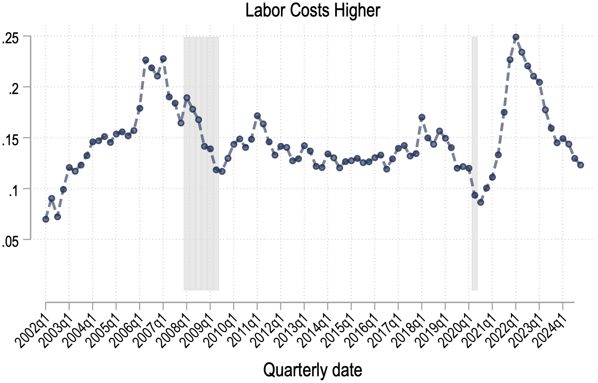
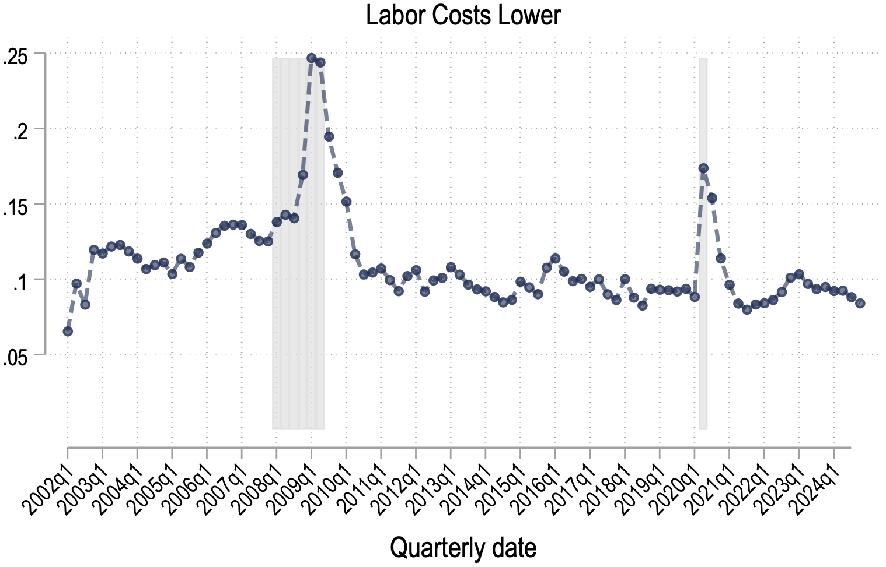
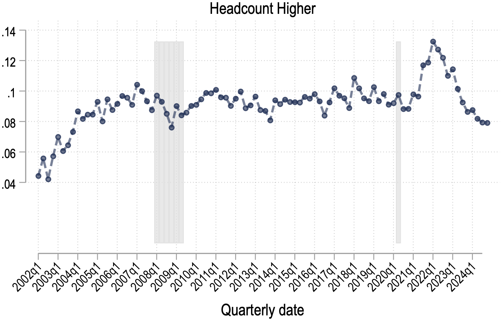
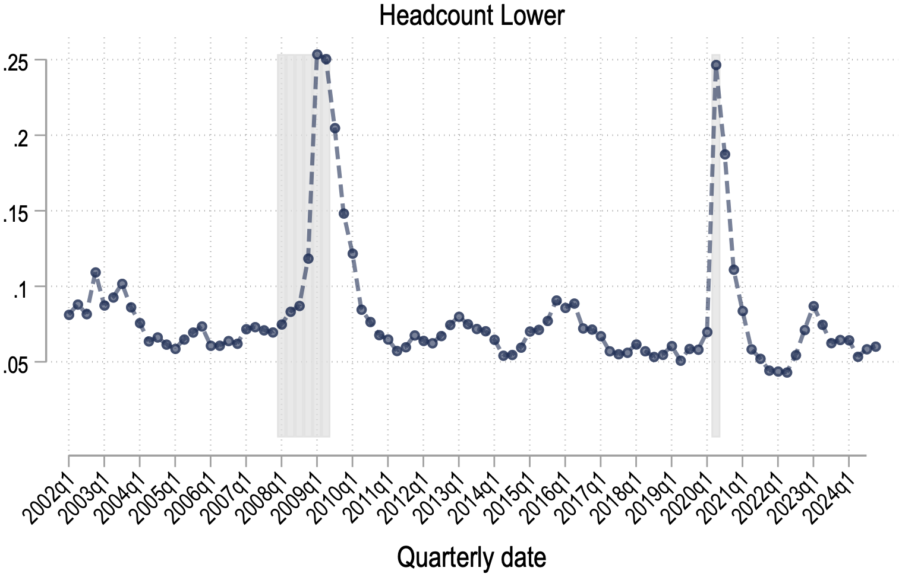
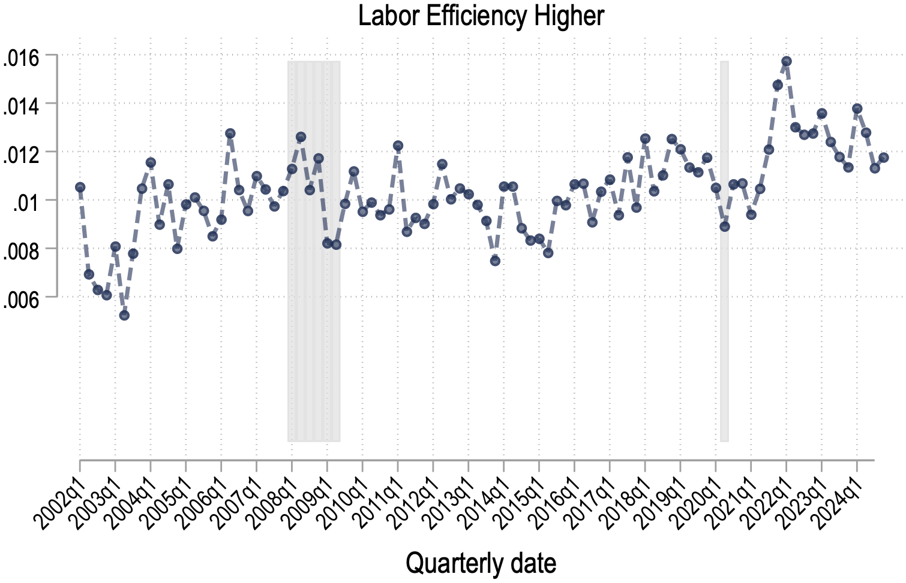
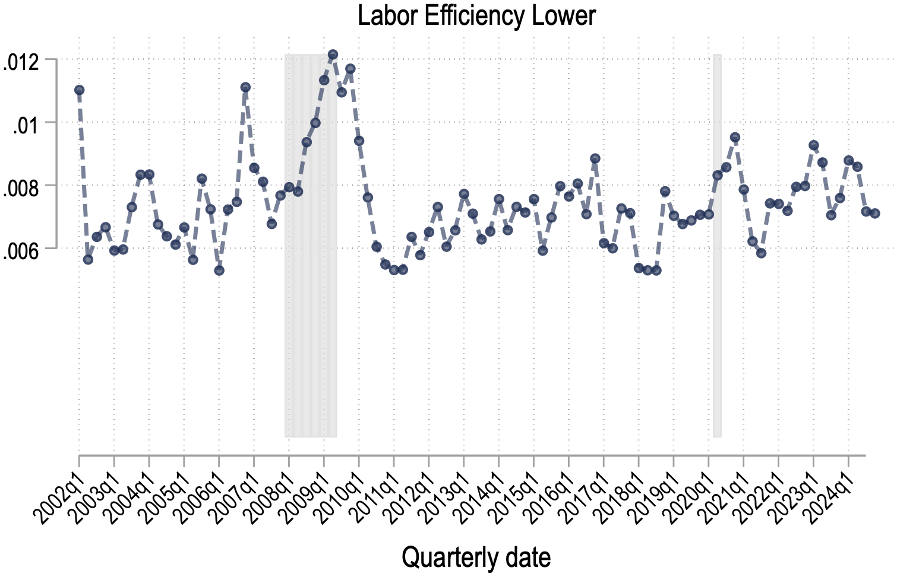
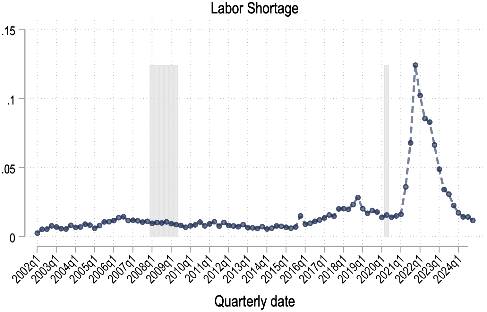
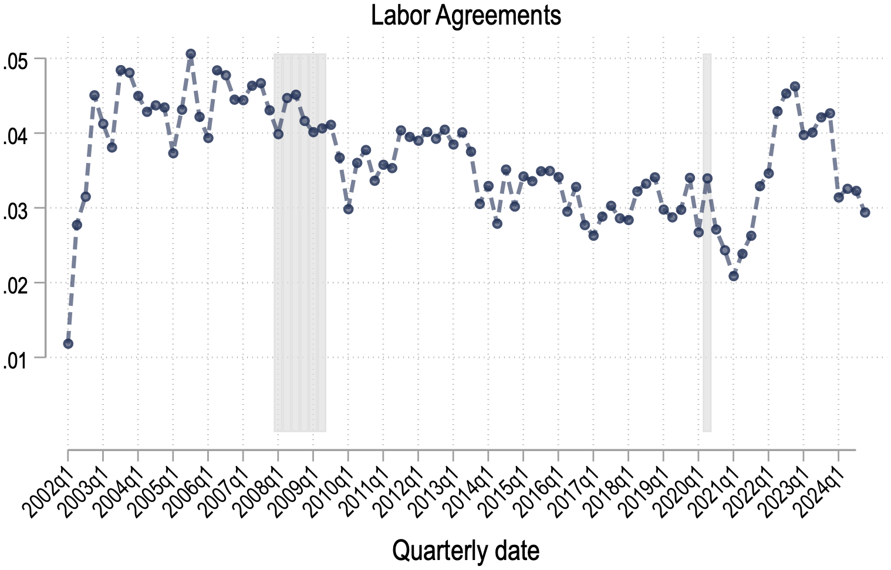
Notes: The figures show the average percent share of sentences of a labor topic mentioned in earnings calls by quarter.
Table A.3:
Discussion of labor topics and wage growth of new hires, at industry level
| \(\Delta log(Earnings_{n,t}\)) | |||
| (1) | (2) | (3) | |
| Labor Costs Higher (std.)\(_{j,t}\) | 1.158*** | 1.572*** | 0.620*** |
| (0.249) | (0.281) | (0.208) | |
| Labor Costs Lower (std.)\(_{j,t}\) | –1.388*** | –1.194*** | –0.469 |
| (0.333) | (0.293) | (0.281) | |
| Headcount Higher (std.)\(_{j,t}\) | 0.593*** | –0.251 | –0.121 |
| (0.180) | (0.326) | (0.329) | |
| Headcount Lower (std.)\(_{j,t}\) | –1.096*** | –1.352*** | –0.948*** |
| (0.290) | (0.293) | (0.300) | |
| Labor Shortage (std.)\(_{j,t}\) | 0.677*** | 0.730*** | 0.206* |
| (0.174) | (0.174) | (0.107) | |
| Labor Efficiency Higher (std.)\(_{j,t}\) | 0.078 | 0.242 | 0.029 |
| (0.155) | (0.183) | (0.159) | |
| Labor Efficiency Lower (std.)\(_{j,t}\) | –0.215 | –0.249 | –0.155 |
| (0.268) | (0.236) | (0.177) | |
| Labor Agreement (std.)\(_{j,t}\) | 0.122 | –0.009 | 0.129 |
| (0.198) | (0.251) | (0.201) | |
| \(R^2\) | 0.061 | 0.089 | 0.439 |
| N | 4,298 | 4,298 | 4,298 |
| Time FE | N | N | Y |
| Industry FE | N | Y | Y |
Notes: The table shows regression of changes in on discussion of labor topics by industry n in quarter t. Earnings denotes earnings for new hires observed in the quarterly workforce indicates aggregated over industry n at time t. Industry is at the NAICS 3-digit level. Each observation denotes a industry n and year t. To construct labor topic observations at the industry x year level we take averages across all quarters in a year. We exclude firms in financial and administrative industries (NAICS 52, 53 and 56). Topic variables are standardized. Regression is weighted by number of earnings calls in the industry. Standard errors are clustered by industry.
Table A.4:
Summary Statistics
| Mean | SD | P1 | P50 | P99 | N | |
| Panel A: Firm-Year Level | ||||||
| Labor Costs Higher | 0.16 | 0.27 | 0.00 | 0.07 | 1.23 | 49,763 |
| Labor Costs Lower | 0.12 | 0.21 | 0.00 | 0.05 | 0.96 | 49,763 |
| Headcount Higher | 0.10 | 0.20 | 0.00 | 0.00 | 0.91 | 49,763 |
| Headcount Lower | 0.09 | 0.18 | 0.00 | 0.00 | 0.84 | 49,763 |
| Labor Shortage | 0.02 | 0.08 | 0.00 | 0.00 | 0.39 | 49,763 |
| Labor Efficiency Higher | 0.01 | 0.05 | 0.00 | 0.00 | 0.23 | 49,763 |
| Labor Efficiency Lower | 0.01 | 0.04 | 0.00 | 0.00 | 0.19 | 49,763 |
| Labor Agreements | 0.04 | 0.14 | 0.00 | 0.00 | 0.55 | 49,763 |
| Labor Exposure | 0.45 | 0.53 | 0.00 | 0.30 | 2.47 | 49,763 |
| Labor Cost Pressures | 0.31 | 1.43 | -4.15 | 0.25 | 4.58 | 49,763 |
| \(\Delta \log (\text{Sales})\) | 0.07 | 0.38 | -0.94 | 0.06 | 1.09 | 41,126 |
| \(\Delta \log (\text{Employment})\) | 0.03 | 0.25 | -0.69 | 0.02 | 0.73 | 40,995 |
| Net Sentiment | 98.52 | 91.40 | -103.52 | 94.12 | 333.33 | 42,323 |
| Risk | 17.30 | 10.64 | 1.90 | 15.36 | 53.25 | 42,323 |
| \(\Delta \log (s^M) \times 100\) (baseline) | -1.24 | 18.31 | -83.71 | -0.44 | 68.20 | 30,361 |
| Panel B: Industry-Quarter Level | ||||||
| Labor Cost Pressures | 0.35 | 1.18 | -2.67 | 0.24 | 4.31 | 5,782 |
| PPI Inflation \(\times 100\) (YoY) | 3.20 | 9.76 | -29.20 | 2.41 | 36.30 | 2,884 |
| ECI Growth \(\times 100\) (YoY) | 2.85 | 1.50 | -2.00 | 2.85 | 6.29 | 1,577 |
| Earnings Growth (Hires) | 0.04 | 0.17 | -0.27 | 0.03 | 0.45 | 4,293 |
| Panel C: Aggregate Quarterly | ||||||
| Labor Cost Pressures | 0.54 | 0.62 | -0.56 | 0.45 | 3.42 | 84 |
| Core PCE Inflation \(\times 100\) (YoY) | 2.07 | 1.08 | 0.67 | 1.75 | 5.56 | 84 |
| Unemployment Rate | 0.02 | 0.01 | 0.01 | 0.02 | 0.05 | 84 |
| Labor Market Tightness | 0.77 | 0.49 | 0.19 | 0.66 | 2.09 | 84 |
| Output Gap \(\times 100\) | -1.37 | 1.98 | -9.21 | -1.04 | 1.34 | 84 |
Notes: This table reports summary statistics for key variables at four levels of aggregation. Panel A shows firm-year level data for the baseline estimation sample (2002–2019), which includes U.S.-headquartered firms with at least 5 years of non-missing labor topic data, excluding mining (NAICS 21), finance (NAICS 52), real estate (NAICS 53), and administrative services (NAICS 56). Panel B shows industry-quarter level data at the NAICS 3-digit level, excluding import-dependent industries (NAICS 315, 334, 339) and FIRE industries (NAICS 520–699). Panel C shows aggregate quarterly time series (2002Q1–2024Q4). Labor topic variables measure the percentage of sentences in earnings calls mentioning each topic. Labor Cost Pressures is the fitted value from regressing changes in the intermediate inputs-to-sales ratio on labor topics (Equation 6). All continuous variables are winsorized at the 1st and 99th percentiles except where noted.
Table A.5:
Estimation of labor cost pressures: Labor topics and variable intermediate input cost share calculated using material inventories, at firm x year level
Table A.6:
Firm level regressions, topics entered individually
| Change in intermediate input share proxy\(_{i,t}\) | ||||||||
| (1) | (2) | (3) | (4) | (5) | (6) | (7) | (8) | |
| Higher labor costs | 1.953*** | |||||||
| (0.620) | ||||||||
| Lower labor costs | -5.117*** | |||||||
| (0.863) | ||||||||
| Higher headcount | 1.266 | |||||||
| (0.890) | ||||||||
| Lower headcount | -2.942*** | |||||||
| (1.084) | ||||||||
| Labor shortages | 3.033 | |||||||
| (2.462) | ||||||||
| Higher efficiency | -3.818 | |||||||
| (2.858) | ||||||||
| Lower efficiency | -4.765 | |||||||
| (2.982) | ||||||||
| Labor agreements | -1.084 | |||||||
| (1.286) | ||||||||
| Labor exposure | 0.799** | 1.370*** | 0.923** | 1.160*** | 0.945** | 1.051*** | 1.027** | 1.056*** |
| (0.407) | (0.410) | (0.409) | (0.411) | (0.406) | (0.403) | (0.404) | (0.408) | |
| \(R^2\) | 0.220 | 0.221 | 0.220 | 0.220 | 0.220 | 0.220 | 0.220 | 0.220 |
| N | 21240 | 21240 | 21240 | 21240 | 21240 | 21240 | 21240 | 21240 |
Notes: Each column reports a separate regression of the dependent variable on a single labor topic, controlling for labor exposure, sentiment, risk, and firm growth controls. All specifications include firm and year fixed effects, and standard errors are clustered by firm. The sample is restricted to years up to 2019.
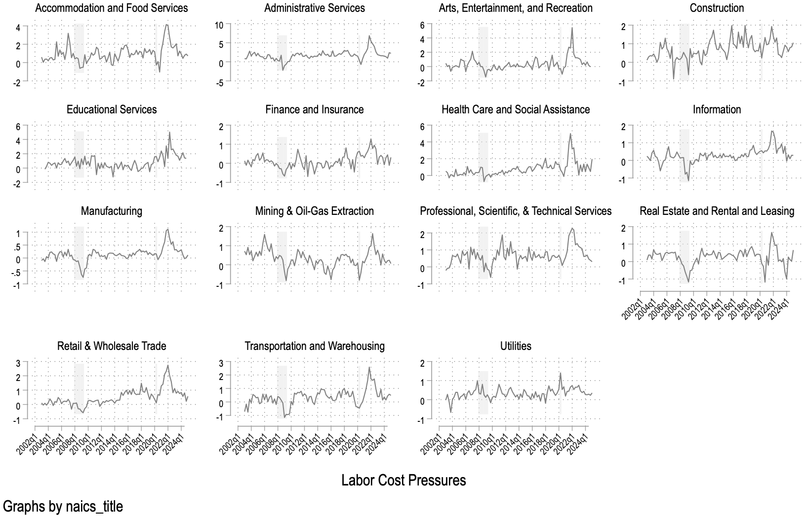
Notes: The figures show the average change in estimated marginal cost of labor across firms by industry and by quarter. The
estimation uses coefficients from Table
2
and topic specific scores by firm and by quarter. We then aggregate these by taking a
sales weighted average across firms by industry and quarter.
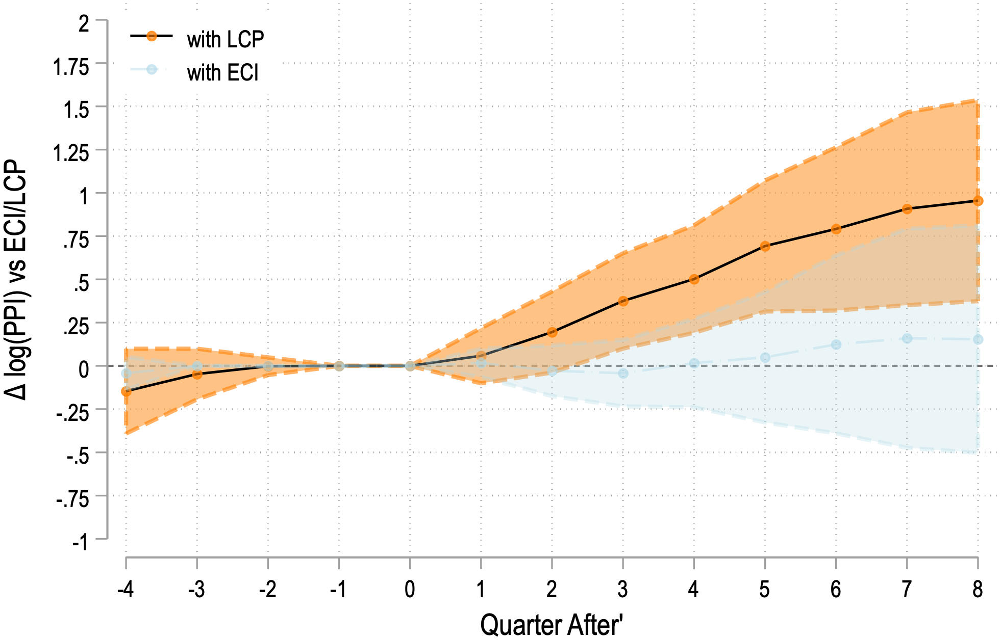
Notes: The figures plots the estimated pass-through of labor cost pressures and employment cost index on PPI inflation across
industries.
Table A.7:
Labor Cost Pressures and Inflation, Industry x time Level
| PPI Inflation\(_{n, (t-4, t)}\) | |||
| (1) | (2) | (3) | |
| Labor Cost Pressures\(_{n,t}\) | 0.387* | 0.642*** | 0.493** |
| (0.227) | (0.234) | (0.241) | |
| \(R^2\) | 0.001 | 0.338 | 0.362 |
| N | 2,832 | 2,832 | 2,832 |
| Industry FE | N | N | Y |
| Time FE | N | Y | Y |
Notes: The table shows regression of PPI inflation observed in industry n between quarters and on estimated changes in MCL for industry in quarter. Industry is one of NAICS 3-digit industries. Estimated changes in MCL for industry in quarter is calculated by taking a sales weighted average of estimated changes in MCL across all firms in Compustat in the industry. We exclude financial and administrative industries (NAICS 52, 53 and 56). Regression is weighted by number of firms observed within the industry. Standard errors are clustered by industry. Inflation is winsorized at 2nd and 98th percentile.
Table A.8:
Variance Decomposition of Labor Cost Pressures
| (1) | (2) | (3) | (4) | (5) | (6) | (7) | |
| Labor Cost Pressures (\(\omega _{it}\)) | |||||||
| Risk\(_{i,t}\) | –0.006*** | –0.006*** | –0.007*** | –0.007*** | |||
| (0.001) | (0.001) | (0.001) | (0.001) | ||||
| Net Sentiment\(_{i,t}\) | 0.001*** | 0.001*** | 0.001*** | 0.001*** | |||
| (0.000) | (0.000) | (0.000) | (0.000) | ||||
| Stock Return\(_{i,t-1}\) | 0.010*** | 0.010*** | 0.006*** | ||||
| (0.001) | (0.001) | (0.002) | |||||
| Stock Return\(_{i,t}\) | –0.001 | 0.000 | 0.001 | ||||
| (0.001) | (0.001) | (0.001) | |||||
| \(R^2\) | 0.030 | 0.106 | 0.215 | 0.233 | 0.234 | 0.311 | 0.370 |
| N | 227,783 | 227,376 | 227,376 | 184,673 | 135,877 | 129,305 | 123,813 |
| Time | Y | N | N | N | N | N | N |
| Industry \(\times\) Time | N | Y | Y | Y | Y | – | – |
| Firm | N | N | Y | Y | Y | Y | Y |
| Ind \(\times\) Size \(\times\) Time | N | N | N | N | N | Y | Y |
| Ind \(\times\) Growth \(\times\) Time | N | N | N | N | N | N | Y |
Notes: The table reports results from regressing firm-level labor cost pressures (\(\omega _{it}\)) on various fixed effects and firm-specific controls. Columns (1)–(5) include time, industry \(\times\) time, and firm fixed effects. Columns (6) and (7) include granular fixed effects, where Size and Growth quintiles are constructed based on the pooled distribution of firm employment and lagged stock returns, respectively. Risk and Net Sentiment are text-based measures constructed following Hassan et al. (2024a). Standard errors are clustered at the firm level.
Figure A.4:
Robustness: Phillips Curve Estimation using Unsupervised Methodology (PCA)
{kind=link}
Notes: This figure plots the coefficient estimates and 95% confidence intervals from a series of regressions. The dependent variable is PPI inflation observed in industry \(n\) between quarters \(t\) and \(t+4\). The x-axis represents different specifications: Index 0 is the baseline Labor Cost Pressure measure (\(MCL_{n,t}\)), while indices 1 through 50 represent specifications using the first 50 Principal Components derived from the underlying text data. The underlying \(MCL\) is calculated as a PCE-weighted average of estimated changes in labor cost pressures across US-headquartered firms in Compustat that hold earnings conference calls in quarter \(t\). We exclude financial and administrative industries (NAICS 52, 53, and 56). All regressions include industry (NAICS3) and time (Date) fixed effects. Standard errors are robust.
Table A.9:
Industry level Phillips Curve robustness to alternative labor cost pressure measures
| Industry PPI inflation\(_{n,t, t+4}\) | ||||
| (1) | (2) | (3) | (4) | |
| Labor cost pressures\(_{n,t}\) (baseline COGS + SGA) | 0.493** | |||
| (0.241) | ||||
| Labor cost pressures\(_{n,t}\) (COGS + material inventory) | 0.863** | |||
| (0.337) | ||||
| Labor cost pressures\(_{n,t}\) (COGS) | 0.946** | |||
| (0.448) | ||||
| Labor cost pressures\(_{n,t}\) (unsupervised PCA) | 0.355** | |||
| (0.151) | ||||
| \(R^2\) | 0.362 | 0.363 | 0.362 | 0.364 |
| N | 2832 | 2832 | 2832 | 2832 |
Notes The table reports industry level regressions of four quarter ahead year on year PPI inflation on alternative measures of labor cost pressures, using NAICS three digit industries as the cross section. All specifications include industry and quarter fixed effects and are weighted by mean number of firms holding earnings conference calls. Standard errors are robust.
Table A.10:
Robustness of Phillips Curve to alternative labor cost pressure measures
| PCE Inflation\(_{t, t+4}\) | ||||
| (1) | (2) | (3) | (4) | |
| Labor cost pressures\(_t\) (baseline COGS + SGA) | 0.343*** | |||
| (0.119) | ||||
| Labor cost pressures\(_t\) (COGS + inventory) | 0.241 | |||
| (0.183) | ||||
| Labor cost pressures\(_t\) (COGS) | 0.471*** | |||
| (0.106) | ||||
| Labor cost pressures\(_t\) (unsupervised PCA) | 0.696*** | |||
| (0.148) | ||||
| \(R^2\) | 0.430 | 0.402 | 0.484 | 0.503 |
| N | 88 | 88 | 88 | 88 |
Notes: The table reports OLS estimates of the Phillips Curve specification using alternative measures of labor cost pressures. The dependent variable is PCE inflation over the next four quarters. Column (1) uses the baseline SGA based measure, column (2) the inventory based measure, column (3) the alternative intermediate inputs measure, and column (4) the unsupervised PCA based measure. All regressions control for lagged Michigan inflation expectations. Standard errors are robust.
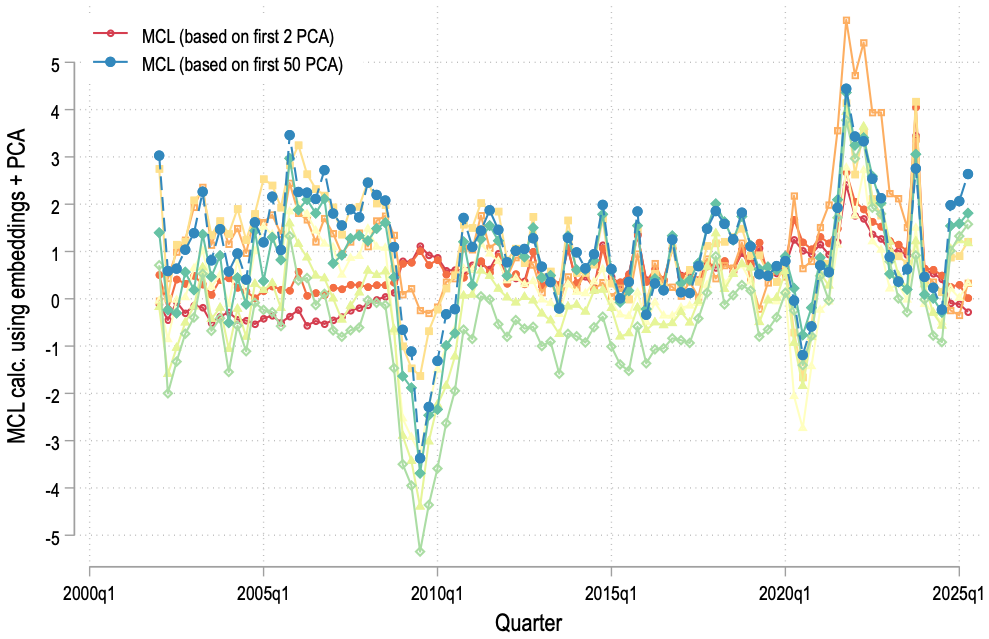
Notes:
The figure plots the aggregate labor cost pressure index constructed using the unsupervised sentence embedding approach.
For each choice of the number of latent topics
\(K \in \{2,4,6,8,10,20,30,40,50\}\)
we apply principal component analysis to Sentence T5 embeddings of labor
related sentences, treat the first
\(K\)
components as topics, and then replicate the baseline mapping from topic variation to changes
in marginal labor costs to obtain an aggregate series. Each line corresponds to one value of
\(K\)
. Lines based on fewer topics are
shown in warmer colors, while lines based on more topics are shown in cooler colors.
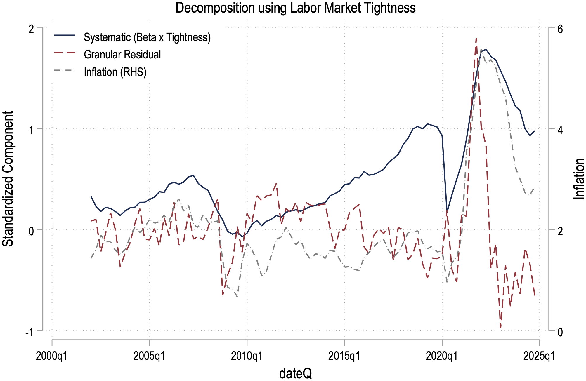
Decomposition using Labor Market Tightness
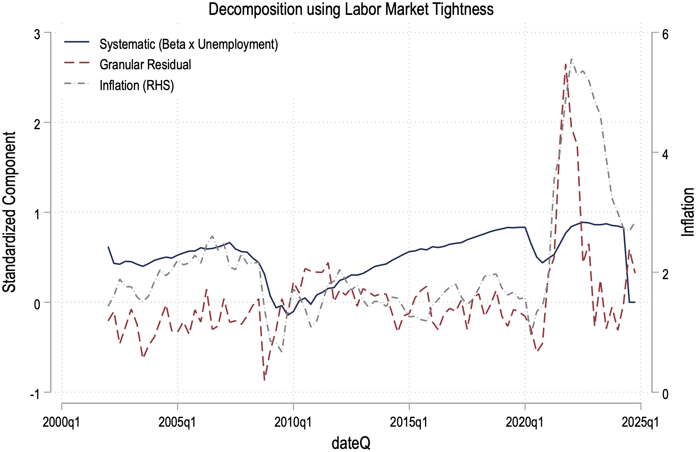
Decomposition using Unemployment Rate
Figure: Figure A.6: Decomposition of Labor Cost Pressures: Systematic vs. Idiosyncratic
Notes: The figure decomposes the aggregate Labor Cost Pressure index into a Systematic component (predicted by firm-level sensitivity to aggregate slack) and a Granular Residual (the unexplained firm-level variation). Panel (a) defines the systematic component using Labor Market Tightness (\(V/U\)), while Panel (b) uses the Unemployment Rate. Both components are standardized.
Table A.11:
Inflation Decomposition: Systematic vs. Idiosyncratic Pressures, without lagged inflation control
| (1) | (2) | (3) | (4) | (5) | (6) | (7) | |
| Total | Unemployment Decomposition | Tightness Decomposition | |||||
| Total Labor Cost Pressures | 0.533*** | ||||||
| (0.118) | |||||||
| Systematic (\(\beta \times U_t\)) | 0.562*** | 0.564*** | |||||
| (0.135) | (0.133) | ||||||
| Idiosyncratic Residual | 0.519*** | 0.520*** | |||||
| (0.159) | (0.148) | ||||||
| Systematic (\(\beta \times V/U_t\)) | 0.557*** | 0.637*** | |||||
| (0.140) | (0.134) | ||||||
| Idiosyncratic Residual | 0.211 | 0.384** | |||||
| (0.209) | (0.156) | ||||||
| \(R^2\) | 0.372 | 0.270 | 0.324 | 0.372 | 0.344 | 0.236 | 0.385 |
| N | 88 | 88 | 88 | 88 | 88 | 88 | 88 |
Notes: The table reports results from regressing PCE inflation on the systematic and idiosyncratic components of the Labor Cost Pressure index. The Systematic Component is constructed by aggregating firm-level predicted values based on aggregate slack (Unemployment or Tightness). The Idiosyncratic Component is constructed by aggregating firm-level residuals. All independent variables are standardized. Standard errors are robust.
10 Data Appendix
10.1 A. Earnings Call and Compustat Data
10.1.1 A.1 Earnings Call Transcript Data
Source and Coverage. We obtain earnings call transcripts from S&P Global Market Intelligence for the period 2008Q1–2025Q1. To these we append web-scraped transcripts from 2002Q1-2007Q4, provided by Hassan et al. (2024a).
Text Processing. We process transcripts using Python with 25 parallel processes in batches of 1,000 transcripts. The pipeline proceeds as follows:
- Sentence segmentation: Using the regular expression pattern (?<!∖w∖.∖w.)(?<![A-Z][a-z]∖.)(?<=∖.|∖?|∖!), which accounts for common abbreviations and transcription errors.
- Text cleaning: Remove hyphens and special markup characters.
- Sentence-level keyword matching: Convert text to lowercase and check for keyword combinations.
- Transcript-level aggregation: Calculate topic exposure \(\Lambda ^k_{i,t}\) as the percentage of sentences mentioning topic \(k\).
The keyword matching algorithm checks whether all words in a tuple appear in a given sentence (order-independent), using a master keyword set for fast sentence filtering.
Keyword Dictionaries. We construct dictionaries for eight primary labor topics: labor costs higher, labor costs lower, headcount higher, headcount lower, labor shortage, labor efficiency higher, labor efficiency lower, and labor agreements. Additional topics include labor count, wages count, labor cost count, labor positive/negative, and overall cost measures. Following Hassan et al. (2024a), we begin with seed keywords and expand using word embeddings trained on earnings call corpora. Multi-word phrases are joined with a special delimiter during text processing to preserve phrase boundaries. Table A.1 reports the top 20 keyword combinations for each of the eight primary topics.
Linking Transcripts to Firms. We match earnings call transcripts to Compustat firms using the S&P Global matching file, which links transcript IDs to Compustat gvkeys and transcript creation dates.
10.1.2 A.2 Compustat Financial Data
Quarterly and Annual Data. We merge transcript-level measures with firm-level financial data from Compustat, including cost of goods sold, selling/general/administrative expenses, depreciation, sales, employment (in thousands), total assets, capital expenditures, R&D expenditures, raw materials inventory, NAICS industry codes (2-digit, 3-digit, 4-digit), and headquarters country code. Quarterly capital expenditures and R&D are constructed from year-to-date values.
Wage Data. Since Compustat does not report firm-level wages, we impute wage bills using employment data from Compustat and average industry earnings from the Quarterly Workforce Indicators (QWI) database at the NAICS 3-digit level. We calculate average quarterly earnings per worker as total payroll divided by total employment, collapse to the appropriate frequency using employment-weighted means, then multiply by firm employment with appropriate adjustments for fiscal year timing (annual) or quarters (quarterly).
Task Content Data. We merge industry-level measures of routine task intensity from occupation-level data at the NAICS 4-digit level for 2012, including share of routine manual tasks, routine cognitive tasks, and overall routine tasks. We classify industries into three categories: Low Routine Manual (LRM, share \(\leq 0.1\)), Medium Routine Manual (MRM, \(0.1 <\) share \(\leq 0.5\)), and High Routine Manual (HRM, share \(> 0.5\)).
Additional Variables. We incorporate firm-level TFP estimates constructed using the Levinsohn-Petrin methodology, text-based measures of risk and sentiment from earnings calls (Hassan et al., 2024a), monthly stock returns aggregated to quarterly frequency, and firm-level automation measures.
10.2 B. Macroeconomic and Industry Data
Labor Market Indicators. We use the unemployment rate (net of temporary layoffs) and labor market tightness (vacancy-to-unemployment ratio) from FRED, with monthly data collapsed to quarterly by taking means. The Employment Cost Index (ECI) is filtered to total compensation (current dollar index, private industry workers) at the NAICS 2-digit level from BLS. Employer-to-employer flows come from FRED (monthly, collapsed to quarterly), and new hire earnings data come from QWI.
Price Indices. Producer Price Index (PPI) data at the NAICS 3-digit level are used to calculate year-over-year inflation as \((\log (\text{PPI}_t) - \log (\text{PPI}_{t-4})) \times 100\), winsorized at 2nd and 98th percentiles. We use core PCE inflation for quarterly year-over-year growth. PCE weights are used to aggregate firm-level measures to match PCE basket composition, constructed at NAICS 3-digit level (and 2-digit where necessary).
Additional Macroeconomic Variables. We use the output gap (monthly, collapsed to quarterly), University of Michigan 10-year CPI expectations, and the Livingston survey for long-run inflation expectations. All monthly data are collapsed to quarterly by taking means.
10.3 C. Sample and Variable Construction
10.3.1 C.1 Sample
Firm-Level Annual Sample. We start with all firm-year observations from the merged dataset and apply the following restrictions: (1) Keep only U.S.-headquartered firms, (2) Drop firms in mining (NAICS 21), finance (NAICS 52), real estate (NAICS 53), and administrative services (NAICS 56), (3) Require at least 5 years of non-missing labor topic data per firm, (4) For baseline estimation (Table 3), restrict to years through 2019 to exclude COVID-19.
Industry-Level Sample. For industry-level PPI inflation regressions, we aggregate firm-level labor cost pressures to the NAICS 3-digit level using sales weights. We exclude import-dependent industries (apparel NAICS 315, computer-electronics NAICS 334, miscellaneous manufacturing NAICS 339) and industries with unclear pricing (FIRE NAICS 520–699).
Aggregate Time Series. For aggregate Phillips curve estimation (Table 6), we construct quarterly time series from 2002Q1–2025Q1 by aggregating firm-level labor cost pressures using PCE expenditure weights at the NAICS 3-digit level, with adjustments for 2-digit industries where necessary. Sample period: 2002Q1–2024Q4 for in-sample estimation; 2015Q1–2025Q1 for out-of-sample forecasting.
10.3.2 C.2 Labor Cost Pressures
Our primary measure of firm-level labor cost pressures is constructed in two steps. Step 1: At the annual level, estimate the regression (Equation 6 in main text):
\[ \begin{aligned} \Delta \log (s^M_{i,t}) = &\sum _{k=1}^{8} \beta _k \Lambda ^k_{i,t} + \beta _{\text{labor\_exp}} \text{labor\_exposure}_{i,t} \\ &+ \gamma _1 \Delta \log (\text{Sales}_{i,t}) + \gamma _2 \Delta \log (\text{Emp}_{i,t}) + \delta _{j(i),t} + \varepsilon _{i,t} \end{aligned} \]
where \(s^M_{i,t}\) is the materials-to-sales ratio, \(\Lambda ^k_{i,t}\) are the eight labor topic exposures, labor exposure is a residual category, and \(\delta _{j(i),t}\) are NAICS 3-digit \(\times\) year fixed effects. Standard errors are clustered at the firm level.
Step 2: Construct the fitted value \(\omega _{i,t} = \sum _{k=1}^{8} \hat{\beta}_k \Lambda ^k_{i,t} + \hat{\beta}_{\text{labor\_exp}} \text{labor\_exposure}_{i,t}\). At the quarterly level, a similar procedure is followed with quarterly wage imputation.
Materials Share Measures. We construct three alternative measures:
- Baseline (COGS + SGA less wages):
\[ s^M_{i,t} = \frac{\text{COGS}_{i,t} + \text{SGA}_{i,t} - \widehat{\text{Wage}}_{i,t}}{\text{Sales}_{i,t}} \]
- COGS only:
\[ s^M_{i,t} = \frac{\text{COGS}_{i,t} - \widehat{\text{Wage}}_{i,t} \times \text{COGS share}_{i,t}}{\text{Sales}_{i,t}} \]
where COGS share allocates wages between COGS and SG&A. 3. COGS + inventory changes:
\[ s^M_{i,t} = \frac{\text{COGS}_{i,t} + \Delta \text{Raw materials inventory}_{i,t}}{\text{Sales}_{i,t}} \]
All measures are winsorized at the 1st and 99th percentiles. The dependent variable is the log-change: \(\Delta \log (s^M_{i,t}) = (\log (s^M_{i,t}) - \log (s^M_{i,t-1})) \times 100\) (annual) or with 4-quarter lag (quarterly).
10.4 D. Unsupervised Topic Construction
As a robustness check, we construct labor topics using sentence embeddings in five stages: (1) Sentence-Level Embedding: Extract labor-related sentences containing master keywords, clean by removing special characters while preserving multi-word phrases, and batch-encode using Sentence-T5-base (768 dimensions), storing embeddings with transcript IDs. (2) Embedding Expansion: Expand 768-dimensional vectors into separate columns. (3) Transcript-Level Aggregation: Group sentence embeddings by transcript ID, compute element-wise means across 768 dimensions, and normalize by sentence count. (4) Matching: Merge with Compustat identifiers using the S&P Global matching file. (5) PCA: Standardize embeddings, extract principal components, and retain the first \(K\) components for \(K \in \{2, 4, 6, 8, 10, 20, 30, 40, 50\}\) as alternative labor topic measures.
We replicate the baseline methodology using PCA-based measures, constructing \(\omega ^{\text{PCA}}_{i,t} = \sum _{k=1}^{K} \tilde{\beta}_k \text{PC}^k_{i,t}\) where \(\tilde{\beta}_k\) are coefficients from regressing materials share changes on PCA scores. Results are reported in Tables A.6–A.7 and Figures A.4–A.5.
10.5 E. Bootstrap Procedure
To construct confidence intervals for the aggregate time series (Figure 3), we implement 200 bootstrap replications by randomly selecting 90% of firms, re-estimating Equation (6) for each sample to obtain \(\hat{\beta}^{(b)}_k\), constructing fitted values \(\omega ^{(b)}_{i,t}\) for each firm-quarter, aggregating to quarterly time series using sales weights, and reporting 10th and 90th percentiles as confidence bands.
Footnotes
For example, KBR Inc. (2013) reported that tight labor markets “hit us faster than we anticipated.” US Foods (2019) described “higher than anticipated wage pressure, as a result of a very tight labor market.” Akumin Inc. (2023) responded: “paying more sign-on bonuses, giving more than typical wage increases…there is a bit of a headwind resulting from those labor costs” (Table 1). These discussions capture not only base wages but also recruitment, retention, training, and productivity costs.↩︎
We represent each labor-related sentence using pre-trained Sentence-T5 embeddings (Ni et al., 2021) and apply principal component analysis to extract latent topics from textual patterns. Comparing results across both approaches confirms our findings are not driven by particular hand-crafted labels.↩︎
This approach is similar to the production function methodology developed by Hall (1988) and recently advanced by De Loecker and Warzynski (2012) to estimate firm-level markups.↩︎
See also recent work by Chen et al. (2026) that integrates structural restrictions from economic theory into machine learning models.↩︎
We use GloVe (Global Vectors for Word Representation) embeddings (Pennington et al., 2014) trained on our corpus of earnings call transcripts from 2002–2019. For each seed term, we identify the 20 most contextually similar terms based on cosine similarity in the embedding space. We then extract 10 random excerpts containing each candidate term and manually classify whether the excerpts discuss labor market conditions. Terms are retained only if at least 8 out of 10 excerpts confirm labor relevance.↩︎
Capital is pre-determined in the previous period and for parsimony we only focus on firm’s static decision.↩︎
Much of the production-based markup literature adopts Cobb–Douglas specifications, under which the output elasticities with respect to intermediate inputs and labor, \(\alpha ^M\) and \(\alpha ^L\), are constant parameters (e.g., De Loecker and Warzynski (2012); De Loecker et al. (2020); De Ridder et al. (2022)). Our approach only requires this restriction to hold locally over the short-run horizon, and our controls for employment growth plus industry-year and firm fixed effects allow \(\alpha ^M\) and \(\alpha ^L\) to vary systematically with scale, within industry-year cells, and across firms.↩︎
Appendix 7 provides further details on data collection and Table A.4 presents key summary statistics.↩︎
This specification choice is consistent with the marginal costs as specified in Gagliardone et al. (2023) who specify firm level marginal costs for firm \(i\) at time \(t\) as \(MC_{i,t}=C_{i,t}A_{i,t}Y_{i,t}^{v}\)where \(v\) is a scaling parameter and \(A_{i,t}\)is a firm level productivity shifter. This type of functional form assumption allows for more general production functions and nests Cobb-Douglas and CES cases.↩︎
Figure A.5 shows very similar aggregate time series patterns when using 2, 4, 8, or 50 unsupervised topics. Series using more unsupervised topics (shown in blue) exhibit higher correlation with our baseline.↩︎
These findings echo those in Hassan et al. (2019), who use earnings conference calls to show that a large portion of the variation in political risk is at the firm quarter level rather than aggregate level. Similarly, Hassan et al. (2024b) show that the effects of Brexit varied largely by firm with large variation in winners, losers and unaffected firms.↩︎
These measures are statistically significant predictors of inflation when lagged inflation is not included as a regressor. This is consistent with Atkeson et al. (2001) who find that these variables do not outperform an AR(1).↩︎